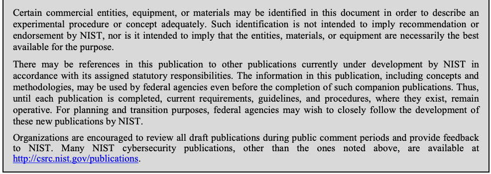

NIST SP 800-125B 日本語訳
英語タイトル : Secure Virtual Network Configuration for Virtual Machine (VM) Protection日本語タイトル : 仮想マシン（VM）保護のための仮想ネットワークセキュア構成
公開日 : 2016-03-07
原文URL : https://csrc.nist.gov/pubs/sp/800/125/b/final
翻訳編集 : 自動生成（有志による非公式の日本語訳）, 原文取得日 : 2026-09-30, 訳文 : 317 / 317 ブロック
[要約] SP 800-125B は、仮想マシン（VM）とその上で動くアプリケーションを保護するための、仮想ネットワークのセキュアな構成に関する推奨事項を示します。ネットワークセグメンテーション、ネットワーク経路の冗長性、ファイアウォールによるトラフィック制御、VM トラフィックの監視の4領域で構成オプションを分析します。扱うのは VM に対するネットワークレベルの保護のみで、ホストレベルの保護と VM データの保護は適用範囲外としています。
NIST Special Publication 800-125B
NIST特別刊行物800-125B
Secure Virtual Network Configuration for Virtual Machine (VM) Protection
仮想マシン（VM）保護のためのセキュアな仮想ネットワーク構成
Ramaswamy Chandramouli
ラマスワミー・チャンドラモウリ
This publication is available free of charge from: http://dx.doi.org/10.6028/NIST.SP.800-125B
本刊行物は、http://dx.doi.org/10.6028/NIST.SP.800-125B から無料で入手できる。
C O M P U T E R S E C U R I T Y
コンピュータセキュリティ
［NIST のロゴ。公的な標章のため、この非公式サイトには掲載していない。原本 PDF を参照。］
NIST Special Publication 800-125B
NIST特別刊行物800-125B
Secure Virtual Network Configuration for Virtual Machine (VM) Protection
仮想マシン（VM）保護のためのセキュアな仮想ネットワーク構成
Ramaswamy Chandramouli Computer Security Division Information Technology Laboratory
ラマスワミー・チャンドラモウリ コンピュータセキュリティ部門 情報技術研究所
This publication is available free of charge from: http://dx.doi.org/10.6028/NIST.SP.800-125B
本刊行物は、http://dx.doi.org/10.6028/NIST.SP.800-125B から無料で入手できる。
March 2016
2016年3月
U.S. Department of Commerce Penny Pritzker, Secretary
米国商務省 ペニー・プリツカー長官
National Institute of Standards and Technology
国立標準技術研究所
Willie May, Under Secretary of Commerce for Standards and Technology and Director
ウィリー・メイ、標準技術担当商務次官兼所長
Authority
権限
This publication has been developed by NIST in accordance with its statutory responsibilities under the Federal Information Security Modernization Act (FISMA) of 2014, 44 U.S.C. § 3541 et seq., Public Law (P.L.) 113-283. NIST is responsible for developing information security standards and guidelines, including minimum requirements for federal information systems, but such standards and guidelines shall not apply to national security systems without the express approval of appropriate federal officials exercising policy authority over such systems. This guideline is consistent with the requirements of the Office of Management and Budget (OMB) Circular A-130.
本刊行物は、2014年連邦情報セキュリティ近代化法（FISMA）、44 U.S.C. § 3541 et seq.、公法（P.L.）113-283に基づく法定責任に従って、NISTが作成したものである。NISTは、連邦情報システムの最低要件を含む情報セキュリティ標準およびガイドラインを策定する責任を負うが、そのような標準およびガイドラインは、国家安全保障システムに対する政策権限を行使する適切な連邦政府当局者の明示的な承認がない限り、当該システムには適用されないものとする。本ガイドラインは、行政管理予算局（OMB）通達A-130の要件と整合している。
Nothing in this publication should be taken to contradict the standards and guidelines made mandatory and binding on federal agencies by the Secretary of Commerce under statutory authority. Nor should these guidelines be interpreted as altering or superseding the existing authorities of the Secretary of Commerce, Director of the OMB, or any other federal official. This publication may be used by nongovernmental organizations on a voluntary basis and is not subject to copyright in the United States. Attribution would, however, be appreciated by NIST.
本刊行物のいかなる内容も、法定権限に基づき商務長官が連邦機関に対して義務的かつ拘束力のあるものとした標準およびガイドラインと矛盾するものと解釈すべきではない。また、これらのガイドラインは、商務長官、OMB長官、またはその他の連邦政府当局者の既存の権限を変更する、またはこれに取って代わるものと解釈すべきではない。本刊行物は、非政府組織が任意で使用してもよく、米国内では著作権の対象とならない。ただし、出典を明示してもらえれば、NISTとしては幸いである。
National Institute of Standards and Technology Special Publication 800-125B Natl. Inst. Stand. Technol. Spec. Publ. 800-125B, 30 pages (March 2016) CODEN: NSPUE2
国立標準技術研究所、特別刊行物800-125B、Natl. Inst. Stand. Technol. Spec. Publ. 800-125B、30ページ（2016年3月）CODEN: NSPUE2
This publication is available free of charge from: http://dx.doi.org/10.6028/NIST.SP.800-125B
本刊行物は、http://dx.doi.org/10.6028/NIST.SP.800-125B から無料で入手できる。
原本PDFの抜粋画像

Comments on this publication may be submitted to: National Institute of Standards and Technology Attn: Computer Security Division, Information Technology Laboratory 100 Bureau Drive (Mail Stop 8930) Gaithersburg, MD 20899-8930
本刊行物に関するコメントは、次の宛先に提出できる。National Institute of Standards and Technology、Attn: Computer Security Division, Information Technology Laboratory、100 Bureau Drive（Mail Stop 8930）、Gaithersburg, MD 20899-8930
Reports on Computer Systems Technology
コンピュータシステム技術に関する報告
The Information Technology Laboratory (ITL) at the National Institute of Standards and Technology (NIST) promotes the U.S. economy and public welfare by providing technical leadership for the Nation’s measurement and standards infrastructure. ITL develops tests, test methods, reference data, proof of concept implementations, and technical analyses to advance the development and productive use of information technology. ITL’s responsibilities include the development of management, administrative, technical, and physical standards and guidelines for the cost-effective security and privacy of other than national security-related information in federal information systems. The Special Publication 800-series reports on ITL’s research, guidelines, and outreach efforts in information system security, and its collaborative activities with industry, government, and academic organizations.
国立標準技術研究所（NIST）の情報技術研究所（ITL）は、国家の計測および標準インフラストラクチャに技術的リーダーシップを提供することにより、米国の経済と公共の福祉を促進している。ITLは、情報技術の開発と生産的な利用を推進するため、試験、試験方法、参照データ、概念実証の実装、および技術的分析を開発している。ITLの責任には、連邦情報システムにおける国家安全保障関連以外の情報の費用対効果の高いセキュリティとプライバシーのための、管理的、事務的、技術的および物理的な標準とガイドラインの策定が含まれる。特別刊行物800シリーズは、情報システムセキュリティに関するITLの研究、ガイドラインおよびアウトリーチ活動、ならびに産業界、政府機関および学術機関との協働活動について報告するものである。
Abstract
概要
Virtual machines (VMs) are key resources to be protected since they are the compute engines hosting mission-critical applications. Since VMs are end nodes of a virtual network, the configuration of the virtual network is an important element in the security of the VMs and their hosted applications. The virtual network configuration areas discussed in this document are network segmentation, network path redundancy, traffic control using firewalls, and VM traffic monitoring. This document analyzes the configuration options under these areas and presents a corresponding set of recommendations for secure virtual network configuration for VM protection.
仮想マシン（VM）は、ミッションクリティカルなアプリケーションをホストする計算エンジンであるため、保護すべき重要なリソースである。VMは仮想ネットワークのエンドノードであるため、仮想ネットワークの構成は、VMおよびそこでホストされるアプリケーションのセキュリティにおける重要な要素である。本書で取り上げる仮想ネットワーク構成領域は、ネットワークセグメンテーション、ネットワーク経路の冗長性、ファイアウォールを使用したトラフィック制御、およびVMトラフィックの監視である。本書は、これらの領域における構成オプションを分析し、それに対応する、VM保護のためのセキュアな仮想ネットワーク構成に関する一連の推奨事項を提示する。
Keywords
キーワード
cloud computing; overlay-based virtual networking; virtual firewall; virtual local area network (VLAN); virtual machine (VM); virtual network segmentation; virtual switch; virtualization
クラウドコンピューティング；オーバーレイベースの仮想ネットワーキング；仮想ファイアウォール；仮想ローカルエリアネットワーク（VLAN）；仮想マシン（VM）；仮想ネットワークセグメンテーション；仮想スイッチ；仮想化
Executive Summary
エグゼクティブサマリー
Data center infrastructures are rapidly becoming virtualized due to increasing deployment of virtualized hosts (also called hypervisor hosts). Virtual machines (VMs) are the key resources to be protected in this virtualized infrastructure since they are the compute engines hosting mission-critical applications of the enterprise. VMs are the end nodes of a virtual network, so the virtual network’s configuration is an important element in the overall security strategy for VMs.
仮想化ホスト（ハイパーバイザーホストとも呼ばれる）の導入が拡大しているため、データセンターのインフラストラクチャは急速に仮想化されつつある。仮想マシン（VM）は、企業のミッションクリティカルなアプリケーションをホストする計算エンジンであるため、この仮想化インフラストラクチャにおいて保護すべき重要なリソースである。VMは仮想ネットワークのエンドノードであるため、仮想ネットワークの構成は、VMの全体的なセキュリティ戦略における重要な要素である。
The purpose of this NIST Special Publication (SP) is to provide an analysis of various virtual network configuration options for protection of virtual machines (VMs) and present recommendations based on the analysis. The relevant configuration areas discussed in this publication are network segmentation, network path redundancy, traffic control through firewalls, and VM traffic monitoring. Each configuration option in each of these areas has different advantages and disadvantages, which are identified in this publication. Analysis of these has led to the development of one or more security recommendations for each configuration area.
このNIST特別刊行物（SP）の目的は、仮想マシン（VM）を保護するためのさまざまな仮想ネットワーク構成オプションの分析を提供し、その分析に基づく推奨事項を提示することである。本刊行物で取り上げる関連構成領域は、ネットワークセグメンテーション、ネットワーク経路の冗長性、ファイアウォールによるトラフィック制御、およびVMトラフィックの監視である。これらの各領域における各構成オプションにはそれぞれ異なる利点と欠点があり、本刊行物ではそれらを特定している。これらの分析の結果、各構成領域について1つ以上のセキュリティ推奨事項が策定された。
The motivation for this document is the trend in U.S. Federal Government agencies to deploy server virtualization within their internal information technology (IT) infrastructures and to use VMs from cloud service providers for agency applications. The target audience for the document is Chief Information Security Officers (CISOs) and other agency personnel and contractors involved in providing the necessary security protections for agency applications through appropriate virtual network configurations. The intended goal is that the analysis of the configuration options provided in this report, along with the security recommendations, will facilitate making informed decisions with respect to architecting the virtual network configuration. Such a configuration is expected to ensure the appropriate level of network protection for all VMs and the application workloads running in them.
本書を作成した動機は、米国連邦政府機関が、内部の情報技術（IT）インフラストラクチャ内でサーバー仮想化を導入し、機関のアプリケーションにクラウドサービスプロバイダーのVMを使用する傾向にあることである。本書の対象読者は、最高情報セキュリティ責任者（CISO）、ならびに適切な仮想ネットワーク構成を通じて機関のアプリケーションに必要なセキュリティ保護を提供することに携わるその他の機関要員および請負業者である。意図する目標は、本報告書に示す構成オプションの分析がセキュリティ推奨事項とともに、仮想ネットワーク構成の設計に関して十分な情報に基づく意思決定を行うことを容易にすることである。このような構成により、すべてのVMおよびその中で実行されるアプリケーションワークロードに対して適切なレベルのネットワーク保護が確保されることが期待される。
Table of Contents
目次
List of Figures
図一覧
1. Introduction
1. はじめに
A significant trend in the buildup of modern data centers is the increasing deployment of virtualized hosts. A virtualized host is a physical host running a server virtualization product (i.e., the hypervisor), making it capable of supporting multiple computing stacks, each with a different platform configuration (e.g., operating system (OS), middleware). The individual computing stack inside a virtualized host (also called a hypervisor host) is encapsulated in an entity called a virtual machine (VM). Since it is a compute engine, a VM has resources assigned to it, such as processors, memory, and storage, and these are called virtual resources. A VM computing stack consists of an OS (called the guest OS), middleware (optional), and one or more application programs. The application programs loaded into a VM are server programs (e.g., web server, database management system (DBMS)), so the whole process of deploying a virtualized host with one or more VMs running inside it is called server virtualization.
現代的なデータセンターの構築における顕著な傾向として、仮想化ホストの導入が増加している。仮想化ホストとは、サーバー仮想化製品（すなわちハイパーバイザー）を実行する物理ホストであり、それぞれ異なるプラットフォーム構成（例：オペレーティングシステム（OS）、ミドルウェア）を持つ複数のコンピューティングスタックをサポートできる。仮想化ホスト（ハイパーバイザーホストとも呼ばれる）内の個々のコンピューティングスタックは、仮想マシン（VM）と呼ばれるエンティティにカプセル化される。VMは計算エンジンであるため、プロセッサ、メモリ、ストレージなどのリソースが割り当てられ、これらは仮想リソースと呼ばれる。VMのコンピューティングスタックは、OS（ゲストOSと呼ばれる）、ミドルウェア（任意）、および1つ以上のアプリケーションプログラムで構成される。VMにロードされるアプリケーションプログラムはサーバープログラム（例：Webサーバー、データベース管理システム（DBMS））であるため、1つ以上のVMを内部で実行する仮想化ホストを展開するプロセス全体を、サーバー仮想化と呼ぶ。
A data center with virtualized hosts is said to have a virtualized infrastructure. The hypervisor inside each virtualized host can define a network that links its VMs with each other and to the outside (physical) enterprise network. This network is called a virtual network since it is entirely software-defined. The core components of this virtual network are one or more virtual network interface cards (vNICs) inside each VM, and virtual switches defined to operate inside the hypervisor kernel. The virtual switches, in turn, are connected to the physical network interface cards (pNICs) of the virtualized host. This provides a communication path for applications and guest OS instances running inside VMs to interact with computing and storage elements on the data center’s physical network. The network traffic flowing inside a virtual network can broadly be classified as follows:
仮想化ホストを備えたデータセンターは、仮想化インフラストラクチャを有すると言う。各仮想化ホスト内のハイパーバイザーは、そのVMを相互に接続し、かつ外部の（物理）企業ネットワークに接続するネットワークを定義できる。このネットワークは完全にソフトウェアで定義されるため、仮想ネットワークと呼ばれる。この仮想ネットワークの中核コンポーネントは、各VM内の1つ以上の仮想ネットワークインターフェースカード（vNIC）と、ハイパーバイザーのカーネル内で動作するよう定義された仮想スイッチである。仮想スイッチは、さらに仮想化ホストの物理ネットワークインターフェースカード（pNIC）に接続される。これにより、VM内で動作するアプリケーションおよびゲストOSインスタンスが、データセンターの物理ネットワーク上のコンピューティング要素やストレージ要素とやり取りするための通信経路が提供される。仮想ネットワーク内を流れるネットワークトラフィックは、大きく次のように分類できる：
•Management traffic (commands for hypervisor administration)
•管理トラフィック（ハイパーバイザー管理用コマンド）
•Infrastructure traffic (e.g., traffic due to VM migration)
•インフラストラクチャトラフィック（例：VM移行に伴うトラフィック）
•Inter-VM traffic (traffic from applications running in VMs)
•VM間トラフィック（VM内で実行されるアプリケーションからのトラフィック）
The configuration options discussed in this document are applicable for protection of all three types of virtual network traffic listed above, though the focus is on securing inter-VM traffic to protect the VMs and the applications hosted on them.
本書で説明する構成オプションは、上記の3種類すべての仮想ネットワークトラフィックの保護に適用できるが、焦点は、VMおよびそこにホストされるアプリケーションを保護するためのVM間トラフィックのセキュリティ確保にある。
1.1 Purpose and Scope
1.1 目的と適用範囲
As the communication pathway for VMs, each virtual network and its associated configuration parameters play a critical role in ensuring the security of the VMs and the mission-critical applications running inside them. This document discusses four virtual network configuration areas that are of particular interest in terms of security: network segmentation, network path redundancy, traffic control using firewalls, and VM traffic monitoring. Various configuration options in each of these areas have distinct advantages and disadvantages. The purpose of this document is to analyze these advantages and disadvantages from a security viewpoint and provide recommendations to organizations for using the configuration options.
VMの通信経路である各仮想ネットワークと、それに関連する構成パラメーターは、VMおよびその内部で実行されるミッションクリティカルなアプリケーションのセキュリティ確保において重要な役割を果たす。本書では、セキュリティの観点から特に関心の対象となる4つの仮想ネットワーク構成領域、すなわちネットワークセグメンテーション、ネットワーク経路の冗長性、ファイアウォールを使用したトラフィック制御、およびVMトラフィックの監視について論じる。これら各領域のさまざまな構成オプションには、それぞれ異なる利点と欠点がある。本書の目的は、セキュリティの観点からこれらの利点と欠点を分析し、構成オプションの利用に関する推奨事項を組織に提示することである。
This document only addresses network-level protections for VMs. Two other areas that organizations need to address for ensuring the overall security of the VM and the applications hosted on them are host-level protection and VM data protection. These areas are outside the scope of this document. Most of the host-level protection measures needed for a VM, such as robust authentication and support for secure access protocols (e.g., Secure Shell (SSH)), are no different than the ones needed for physical servers. There are only a few host-level operations specific to VMs that need secure practices (e.g., restarting VMs from snapshots). VM data, generally stored under well-established storage networking technologies (e.g., iSCSI, Fiber Channel), requires protection measures such as encryption, access control and backup schemes and these are outside the scope of this document as well.
本書が扱うのは、VMに対するネットワークレベルの保護のみである。VMおよびそこにホストされるアプリケーションの総合的なセキュリティを確保するために組織が対処する必要のある他の2つの領域は、ホストレベルの保護とVMデータの保護である。これらの領域は本書の適用範囲外である。堅牢な認証やセキュアなアクセスプロトコル（例：Secure Shell（SSH））のサポートなど、VMに必要なホストレベルの保護対策の大半は、物理サーバーに必要なものと変わらない。安全な運用慣行を必要とするVM固有のホストレベル操作は、わずかしかない（例：スナップショットからのVMの再起動）。VMデータは一般に、確立されたストレージネットワーキング技術（例：iSCSI、Fiber Channel）のもとで保存され、暗号化、アクセス制御、バックアップ方式などの保護対策を必要とするが、これらも本書の適用範囲外である。
1.2 Organization of this Publication
1.2 本刊行物の構成
The organization of the rest of this publication is as follows:
本刊行物の以降の構成は次のとおりである：
•Section 2 discusses network segmentation configuration approaches for VM protection.
•第2節では、VM保護のためのネットワークセグメンテーション構成手法について論じる。
•Section 3 examines the options for establishing network path redundancy for VMs.
•第3節では、VMのネットワーク経路冗長性を確立するためのオプションを検討する。
•Section 4 explores how different types of firewalls can be used to control virtual network traffic.
•第4節では、さまざまな種類のファイアウォールを仮想ネットワークトラフィックの制御にどのように使用できるかを探る。
•Section 5 explains how all incoming and outgoing VM traffic can be captured and monitored.
•第5節では、VMのすべての受信および送信トラフィックをどのようにキャプチャして監視できるかを説明する。
•Section 6 provides a brief summary for the publication.
•第6節では、本刊行物の簡潔な要約を示す。
•Appendix A lists all the acronyms used in the publication.
•付録Aでは、本刊行物で使用されるすべての略語を列挙する。
•Appendix B offers a bibliography of selected materials related to the topic of this publication.
•付録Bでは、本刊行物の主題に関連する選定資料の参考文献一覧を示す。
2. Network Segmentation Configurations for VM Protection
2. VM保護のためのネットワークセグメンテーション構成
Network segmentation is an often-misunderstood technique. Some security practitioners view network segmentation as being purely for network management purposes. However, other security practitioners consider network segmentation as an integral part or at least a preliminary step of a defense-in-depth network security strategy. Security standards such as the Payment Card Industry Data Security Standard (PCI DSS) specifically cite network segmentation as a requirement for data protection. Similarly, network segmentation is sometimes viewed as being synonymous with use of a virtual local area network (VLAN), but this is inaccurate. This section identifies five distinct approaches to network segmentation, with VLAN deployment being one of them.
ネットワークセグメンテーションは、しばしば誤解されている手法である。セキュリティ実務者の中には、ネットワークセグメンテーションを純粋にネットワーク管理を目的とするものと捉える者もいる。一方、他のセキュリティ実務者は、ネットワークセグメンテーションを多層防御型のネットワークセキュリティ戦略の不可欠な要素、または少なくともその予備段階と考えている。Payment Card Industry Data Security Standard（PCI DSS）などのセキュリティ標準は、データ保護の要件としてネットワークセグメンテーションを明示的に挙げている。同様に、ネットワークセグメンテーションは仮想ローカルエリアネットワーク（VLAN）の使用と同義と見なされることがあるが、これは正確ではない。本節では、ネットワークセグメンテーションの5つの異なる手法を特定する。VLANの導入はそのうちの1つである。
The main motivation for network segmentation is to achieve logical separation for applications with different sensitivity levels or belonging to different departments. The network segmentation approaches discussed in this section are organized by their increasing order of scalability. The initial approach is to host all applications of a given sensitivity level in one VM and host all VMs of the same sensitivity level (based on hosted applications) in a given virtualized host (Section 2.1). This is not strictly a network segmentation approach, since it does not involve configuring a network parameter, but it is still included here because it meets the objective of providing VM protection. Sections 2.2 and 2.3 discuss approaches for creating virtual network segments inside a virtualized host using virtual switches and virtual firewalls, respectively. Truly scalable (data center-wide) approaches for creating virtual network segments that span multiple virtualized hosts are discussed in Sections 2.4 and 2.5. These approaches are based on VLAN and overlay-based virtual networking technologies, respectively.
ネットワークセグメンテーションの主な動機は、機密レベルが異なるアプリケーション、または異なる部門に属するアプリケーションの論理的な分離を実現することである。本節で説明するネットワークセグメンテーション手法は、拡張性が高まる順に整理されている。最初の手法は、特定の機密レベルのすべてのアプリケーションを1つのVMにホストし、（ホストするアプリケーションに基づき）同じ機密レベルのすべてのVMを特定の仮想化ホストにホストする方法である（第2.1節）。これはネットワークパラメーターの構成を伴わないため、厳密にはネットワークセグメンテーション手法ではないが、VM保護を提供するという目的を満たすため、ここに含めている。第2.2節と第2.3節では、それぞれ仮想スイッチと仮想ファイアウォールを使用して仮想化ホスト内に仮想ネットワークセグメントを作成する手法について論じる。複数の仮想化ホストにまたがる仮想ネットワークセグメントを作成する、真に拡張性の高い（データセンター全体に及ぶ）手法については、第2.4節と第2.5節で論じる。これらの手法は、それぞれVLANとオーバーレイベースの仮想ネットワーキング技術に基づいている。
2.1 Separating Virtualized Hosts
2.1 仮想化ホストの分離
When enterprise applications of different sensitivity levels were first being hosted in VMs, the initial network-based protection measure was to locate applications with different sensitivity levels in different virtualized hosts. This isolation between applications was extended into the physical network of the data center by connecting these virtualized hosts to different physical switches and regulating the traffic between these physical switches using firewall rules. Alternatively, virtualized hosts carrying application workloads of different sensitivity levels were mounted in different racks so that they were connected to different top-of-rack (ToR) switches.
異なる機密レベルの企業アプリケーションがVMでホストされ始めた当初、最初のネットワークベースの保護策は、異なる機密レベルのアプリケーションを別々の仮想化ホストに配置することであった。アプリケーション間のこの分離は、これらの仮想化ホストを異なる物理スイッチに接続し、ファイアウォールルールを使用してこれらの物理スイッチ間のトラフィックを規制することで、データセンターの物理ネットワークにまで拡張された。あるいは、異なる機密レベルのアプリケーションワークロードを担う仮想化ホストを別々のラックに搭載し、それらが異なるトップオブラック（ToR）スイッチに接続されるようにした。
2.1.1 Advantages
2.1.1 利点
The most obvious advantage of this approach to segmentation is the simplicity of network configuration and the ease of network monitoring since traffic flowing into and out of VMs hosting workloads of different sensitivity levels are physically isolated.
このセグメンテーション手法の最も明白な利点は、ネットワーク構成の単純さとネットワーク監視の容易さである。これは、異なる機密レベルのワークロードをホストするVMに出入りするトラフィックが物理的に分離されるためである。
2.1.2 Disadvantages
2.1.2 欠点
The basic economic goal of full hardware utilization is unlikely to be realized when this approach is used because only VMs with the appropriate sensitivity level may be placed onto a particular virtualized host. This tends to negatively impact workload balancing for the data center as a whole. This approach will also hamper flexibility in VM migration because the target host must be of the same sensitivity level as the source host.
この手法を用いると、ハードウェアを完全に利用するという基本的な経済目標は達成されにくい。これは、適切な機密レベルのVMしか特定の仮想化ホストに配置できないためである。このことは、データセンター全体のワークロードバランシングに悪影響を及ぼす傾向がある。また、移行先ホストは移行元ホストと同じ機密レベルでなければならないため、この手法はVM移行の柔軟性も損なう。
2.2 Using Virtual Switches
2.2 仮想スイッチの使用
Another approach to segmentation is to connect VMs with different sensitivity levels to different virtual switches within a single virtualized host. The isolation of traffic between VMs of different sensitivity levels can be achieved by connecting the appropriate virtual and physical switches to each other with their traffic going through one of the virtualized host’s pNICs. Finally, the traffic flow between the physical switches has to be regulated through the usual mechanisms, such as a firewall.
セグメンテーションの別の手法は、異なる機密レベルのVMを、単一の仮想化ホスト内の異なる仮想スイッチに接続することである。異なる機密レベルのVM間のトラフィックの分離は、適切な仮想スイッチと物理スイッチを相互に接続し、そのトラフィックが仮想化ホストのpNICのいずれかを通過するようにすることで実現できる。最後に、物理スイッチ間のトラフィックフローを、ファイアウォールなどの通常の仕組みによって規制しなければならない。
2.2.1 Advantages
2.2.1 利点
Segmenting VMs using virtual switches as opposed to hosting them in different virtualized hosts promotes better utilization of virtualized host resources while still maintaining ease of configuration. Further, by design, all hypervisor architectures prevent direct connections between virtual switches within a hypervisor platform, thus providing the necessary isolation.
VMを別々の仮想化ホストでホストするのではなく、仮想スイッチを使用してセグメント化することは、構成の容易さを維持しながら、仮想化ホストのリソースのより良い利用を促進する。さらに、すべてのハイパーバイザーアーキテクチャは、設計上、ハイパーバイザープラットフォーム内の仮想スイッチ間の直接接続を防ぐため、必要な分離が提供される。
2.2.2 Disadvantages
2.2.2 欠点
There should be as many virtual switches in a virtualized host as there are applications/workloads of different sensitivity levels; this may lead to inefficient use of virtual switches. The flexibility in VM migration may be hampered due to non-availability of ports in the virtual switches of the same sensitivity level (based on the sensitivity level of the migrating VM) in the target host.
仮想化ホストには、機密レベルが異なるアプリケーション／ワークロードの数と同じ数の仮想スイッチがあるべきであり、これは仮想スイッチの非効率な使用につながる可能性がある。移行先ホストにおいて、（移行するVMの機密レベルに基づく）同じ機密レベルの仮想スイッチのポートが利用できないことにより、VM移行の柔軟性が損なわれる可能性がある。
2.2.3 Distributed Virtual Switches
2.2.3 分散型仮想スイッチ
The constraints and limitations on VM migration outlined in Sections 2.2.2 and 2.3.2, as well as the network span limitation outlined in Section 2.3.2, do not exist if distributed virtual switches are deployed in the virtualized infrastructure instead of standalone virtual switches. A distributed virtual switch abstracts many individual, host-level virtual switches into a single large virtual switch that spans multiple hosts. Consequently, port groups associated with virtual switches become distributed virtual port groups that span virtualized hosts, thus ensuring consistent virtual network configuration across all hosts, especially those within the same cluster.
スタンドアロンの仮想スイッチの代わりに分散型仮想スイッチを仮想化インフラストラクチャに導入した場合、第2.2.2節および第2.3.2節で概説したVM移行に関する制約および制限、ならびに第2.3.2節で概説したネットワーク範囲の制限は存在しない。分散型仮想スイッチは、ホストレベルの多数の個別の仮想スイッチを、複数のホストにまたがる単一の大規模な仮想スイッチへと抽象化する。その結果、仮想スイッチに関連付けられたポートグループは、仮想化ホストにまたがる分散型仮想ポートグループとなり、これによって、すべてのホスト、とりわけ同一クラスター内のホストにわたって一貫した仮想ネットワーク構成が確保される。
2.3 Using Virtual Firewalls
2.3 仮想ファイアウォールの使用
When Internet-facing applications (especially web applications) are run on (non-virtualized) physical hosts, a separate subnet called a Demilitarized Zone (DMZ) is usually created using physical firewalls. Similarly, when VMs hosting web servers running Internet-facing applications are deployed on a virtualized host, they can be isolated and run in a virtual network segment that is separated from a virtual network segment that is connected to the enterprise’s internal network. Just as two firewalls – one facing the internet and the other protecting the internal network – are used in a physical network, two firewalls are used inside a virtualized host to create the virtual network equivalent of a DMZ. The major difference in the case of a virtualized host is that the firewalls have to run in a virtual network, so they are virtual software-based firewalls run on dedicated (usually hardened) VMs. A configuration for a DMZ inside a virtualized host is shown in Figure 1.
インターネットに面したアプリケーション（特にWebアプリケーション）を（非仮想化の）物理ホストで実行する場合、通常は物理ファイアウォールを使用して、非武装地帯（DMZ）と呼ばれる別個のサブネットを作成する。同様に、インターネットに面したアプリケーションを実行するWebサーバーをホストするVMを仮想化ホストに展開する場合、それらのVMを隔離し、企業の内部ネットワークに接続された仮想ネットワークセグメントから分離された仮想ネットワークセグメント内で実行できる。物理ネットワークにおいて、インターネットに面するファイアウォールと内部ネットワークを保護するファイアウォールの2つが使用されるのと同様に、仮想化ホスト内でも2つのファイアウォールを使用して、DMZに相当するものを仮想ネットワーク上に作成する。仮想化ホストの場合の大きな違いは、ファイアウォールが仮想ネットワーク内で動作しなければならないことであり、そのため、これらは専用の（通常は堅牢化された）VM上で動作する仮想のソフトウェアベースのファイアウォールとなる。仮想化ホスト内のDMZの構成を図1に示す。
Figure 1 shows three virtual switches, VS-1, VS-2, and VS-3, inside the virtualized host. The uplink port of VS-1 is connected to the physical NIC pNIC-1, which is connected to a physical switch in the external network. Similarly, the uplink port of VS-3 is connected to the physical NIC pNIC-2, which is connected to a physical switch in the data center’s internal network. The firewall appliances running in VM1 and VM4 play the roles of Internet-facing firewall and internal firewall, respectively. VM1 acts as the traffic control bridge between the virtual switches VS-1 and VS-2, while VM4 acts as the traffic control bridge between the virtual switches VS-2 and VS-3. This configuration creates an isolated virtual network segment based on the virtual switch VS-2 (DMZ of the virtual network), since VS-2 can only communicate with the Internet using the firewall in VM1 and with the internal network using the firewall in VM4. All VMs connected to the virtual switch VS-2 (VM2 and VM3) run in this isolated virtual network segment as well. All traffic involving them and the external network is controlled by the firewall in VM1, and all traffic involving them and the internal network is controlled by the firewall in VM4.
図1には、仮想化ホスト内の3つの仮想スイッチ、VS-1、VS-2、VS-3が示されている。VS-1のアップリンクポートは物理NIC pNIC-1に接続され、pNIC-1は外部ネットワーク内の物理スイッチに接続されている。同様に、VS-3のアップリンクポートは物理NIC pNIC-2に接続され、pNIC-2はデータセンターの内部ネットワーク内の物理スイッチに接続されている。VM1およびVM4で動作するファイアウォールアプライアンスは、それぞれインターネットに面するファイアウォールと内部ファイアウォールの役割を果たす。VM1は仮想スイッチVS-1とVS-2の間のトラフィック制御ブリッジとして機能し、VM4は仮想スイッチVS-2とVS-3の間のトラフィック制御ブリッジとして機能する。この構成では、仮想スイッチVS-2に基づく分離された仮想ネットワークセグメント（仮想ネットワークのDMZ）が作成される。これは、VS-2が、インターネットとはVM1内のファイアウォールを使用してのみ、内部ネットワークとはVM4内のファイアウォールを使用してのみ通信できるためである。仮想スイッチVS-2に接続されたすべてのVM（VM2およびVM3）も、この分離された仮想ネットワークセグメント内で動作する。これらのVMと外部ネットワークが関与するすべてのトラフィックはVM1内のファイアウォールによって制御され、これらのVMと内部ネットワークが関与するすべてのトラフィックはVM4内のファイアウォールによって制御される。
![Figure 1: Segmentation Using Virtual Switches and Virtual Firewalls. Inside a host frame, four VM boxes sit above a “Hypervisor” box that contains virtual switches “VS-1”, “VS-2” and “VS-3”. “VM1” (“Virtual Firewall Appliance”) has two vNICs: one connected to VS-1 and one to VS-2. “VM2” (“Web Server”) and “VM3” (“DB Server”) each have one vNIC connected to VS-2. “VM4” (“Virtual Firewall Appliance”) has two vNICs: one connected to VS-2 and one to VS-3. VS-1 connects to “pNIC-1 (To External Network)” and VS-3 connects to “pNIC-2 (To Internal Network)”; VS-2 has no physical NIC. Dashed vertical lines bracket VM2, VM3 and VS-2 as the “Virtual DMZ Segment”. All connections are double-headed arrows.](assets/125b/p0012-figure-01.png)
図1：仮想スイッチおよび仮想ファイアウォールを使用したセグメンテーション。ホストの枠の中で、4つのVMの箱が、仮想スイッチ「VS-1」、「VS-2」、「VS-3」を含む「Hypervisor」（ハイパーバイザー）の箱の上にある。「VM1」（「Virtual Firewall Appliance」、仮想ファイアウォールアプライアンス）は2つのvNICを持ち、一方はVS-1に、もう一方はVS-2に接続される。「VM2」（「Web Server」、Webサーバー）と「VM3」（「DB Server」、DBサーバー）はそれぞれ1つのvNICでVS-2に接続される。「VM4」（「Virtual Firewall Appliance」）は2つのvNICを持ち、一方はVS-2に、もう一方はVS-3に接続される。VS-1は「pNIC-1 (To External Network)」（外部ネットワークへのpNIC-1）に、VS-3は「pNIC-2 (To Internal Network)」（内部ネットワークへのpNIC-2）に接続され、VS-2には物理NICがない。VM2、VM3、VS-2は縦の破線で挟まれ、「Virtual DMZ Segment」（仮想DMZセグメント）と示されている。接続はすべて両方向の矢印である。
Figure 1: Segmentation Using Virtual Switches and Virtual Firewalls
図1：仮想スイッチおよび仮想ファイアウォールを使用したセグメンテーション
Looking at the above virtual network configuration from a VM point of view (ignoring whether they run a firewall or a business application), VM1 and VM4 are multi-homed VMs with at least one vNIC connected to a virtual switch that has its uplink port connected to a physical NIC. By contrast, VM2 and VM3 are connected only to an internal virtual switch, VS2, which is not connected to any physical NIC. Such a virtual switch is called an internal-only switch. VMs connected only to internal-only switches enjoy a degree of isolation because they run in an isolated virtual network segment.
上記の仮想ネットワーク構成をVMの視点から見ると（それらがファイアウォールを実行しているか業務アプリケーションを実行しているかは考慮しない）、VM1とVM4はマルチホームVMであり、少なくとも1つのvNICが、アップリンクポートを物理NICに接続した仮想スイッチに接続されている。これに対し、VM2とVM3は、いずれの物理NICにも接続されていない内部仮想スイッチVS2にのみ接続されている。このような仮想スイッチは、内部専用スイッチと呼ばれる。内部専用スイッチのみに接続されたVMは、分離された仮想ネットワークセグメント内で動作するため、ある程度の分離を享受する。
2.3.1 Advantages
2.3.1 利点
Virtual firewalls come packaged as virtual security appliances on purpose-built VMs, so they are easy to deploy. Also, virtual firewalls can be easily integrated with virtualization management tools/servers, so they can be easily configured (especially their security rules or access control lists (ACLs)) as well.
仮想ファイアウォールは、専用に構築されたVM上の仮想セキュリティアプライアンスとしてパッケージ化されて提供されるため、導入が容易である。また、仮想ファイアウォールは仮想化管理ツール／サーバーと容易に統合できるため、構成（特にセキュリティルールやアクセス制御リスト（ACL）の構成）も容易に行える。
2.3.2 Disadvantages
2.3.2 欠点
The VMs hosting the virtual firewalls compete for the same hypervisor host resources (e.g., CPU, memory) as VMs running business applications, since the former are co-hosted with the latter in the same physical host.
仮想ファイアウォールをホストするVMは、業務アプリケーションを実行するVMと同じ物理ホスト上に同居するため、業務アプリケーションを実行するVMと同じハイパーバイザーホストのリソース（例：CPU、メモリ）を奪い合う。
The span of the protected network segment is limited to a single virtualized host. Migration of the VMs in the protected network segment (for load balancing or fault tolerance reasons) to another virtualized host is possible only if the target host has an identical virtual network configuration, so this constrains VM migration flexibility. Creating virtualized hosts with identical virtual network configurations may limit full utilization of the hosts.
保護対象ネットワークセグメントの範囲は、単一の仮想化ホストに限られる。保護対象ネットワークセグメント内のVMを（負荷分散またはフォールトトレランスの理由で）別の仮想化ホストへ移行できるのは、移行先ホストが同一の仮想ネットワーク構成を持つ場合に限られるため、VM移行の柔軟性が制約される。同一の仮想ネットワーク構成を持つ仮想化ホストを作成すると、ホストを十分に活用できなくなる可能性がある。
2.4 Using VLANs in Virtual Network
2.4 仮想ネットワークにおけるVLANの使用
VLANs were originally implemented in data centers where nodes were configured to operate in Ethernet-switched modes for ease of control and network management (e.g., broadcast containment). As a network segmentation technique, it provided value as a security measure because of the traffic isolation effect. In a data center with all physical (non-virtualized) hosts, a VLAN is defined by assigning a unique ID called a VLAN tag to one or more ports of a physical switch. All hosts connected to those ports then become members of that VLAN ID, creating a logical grouping of servers (hosts), regardless of their physical locations, in the large flat network of a data center. An example of a VLAN configuration is shown in Figure 2.
VLANは当初、制御とネットワーク管理（例：ブロードキャストの封じ込め）を容易にするために、ノードがイーサネットスイッチングモードで動作するよう構成されたデータセンターで実装された。ネットワークセグメンテーション技術として、VLANはトラフィックを分離する効果があるため、セキュリティ対策としての価値をもたらした。すべてのホストが物理（非仮想化）ホストであるデータセンターでは、VLANは、VLANタグと呼ばれる一意のIDを物理スイッチの1つ以上のポートに割り当てることで定義される。それらのポートに接続されたすべてのホストはそのVLAN IDのメンバーとなり、データセンターの大規模でフラットなネットワークにおいて、物理的な場所にかかわらず、サーバー（ホスト）の論理的なグループが形成される。VLAN構成の例を図2に示す。
The concept of VLANs can be extended and implemented in a data center with virtualized hosts using virtual switches with ports or port groups that support VLAN tagging and processing. In other words, VLAN IDs are assigned to ports of a virtual switch inside a hypervisor kernel, and VMs are assigned to appropriate ports based on their VLAN membership. These VLAN-capable virtual switches can perform VLAN tagging of all packets going out of a VM (with the tag depending upon which port it has received the packet from) and can route an incoming packet with a specific VLAN tag to the appropriate VM by sending it through a port with a VLAN ID assignment equal to the VLAN tag of the packet and with a matching media access control (MAC) address match.
VLANの概念は、VLANのタグ付けおよび処理をサポートするポートまたはポートグループを備えた仮想スイッチを使用することで、仮想化ホストを持つデータセンターにも拡張して実装できる。すなわち、ハイパーバイザーカーネル内の仮想スイッチのポートにVLAN IDが割り当てられ、VMはそのVLANメンバーシップに基づいて適切なポートに割り当てられる。これらのVLAN対応仮想スイッチは、VMから出ていくすべてのパケットにVLANタグを付けることができ（タグは、どのポートからパケットを受信したかによって決まる）、また、特定のVLANタグを持つ着信パケットを、そのパケットのVLANタグと等しいVLAN IDが割り当てられ、かつメディアアクセス制御（MAC）アドレスが一致するポートを通して送ることで、適切なVMへルーティングできる。
Corresponding to the VLAN configuration of the various virtual switches inside a virtualized host, link aggregation should be configured on links between the pNICs of these virtualized hosts and the physical switches in the data center. This is necessary so that these links can carry traffic corresponding to all VLAN IDs configured inside that virtualized host. Further, the ports of the physical switch, which forms the termination point of these links, should also be configured as trunking ports (capable of receiving and sending traffic belonging to multiple VLANs). A given VLAN ID can be assigned to ports of virtual switches located in multiple virtualized hosts. Thus the combined VLAN configuration, consisting of the configuration inside the virtualized host (assigning VLAN IDs to ports of virtual switches or vNICs of VMs) and the configuration outside the virtualized host (link aggregation and port trunking in physical switches), provides a pathway for VLANs defined in the physical network to be carried into a virtualized host (and vice versa). This provides the ability to isolate traffic emanating from VMs distributed throughout the data center, and thus a means to provide confidentiality and integrity protection to the applications running inside those VMs.
仮想化ホスト内の各仮想スイッチのVLAN構成に対応して、これらの仮想化ホストのpNICとデータセンター内の物理スイッチとの間のリンクには、リンクアグリゲーションを構成すべきである。これは、これらのリンクが、当該仮想化ホスト内で構成されたすべてのVLAN IDに対応するトラフィックを運べるようにするために必要である。さらに、これらのリンクの終端点となる物理スイッチのポートも、トランクポート（複数のVLANに属するトラフィックを送受信できるポート）として構成すべきである。ある1つのVLAN IDを、複数の仮想化ホストにある仮想スイッチのポートに割り当てることができる。このように、仮想化ホスト内の構成（仮想スイッチのポートまたはVMのvNICへのVLAN IDの割り当て）と仮想化ホスト外の構成（物理スイッチにおけるリンクアグリゲーションおよびポートトランキング）からなる、組み合わされたVLAN構成は、物理ネットワークで定義されたVLANを仮想化ホスト内へ引き込む（およびその逆の）ための経路を提供する。これにより、データセンター全体に分散したVMから発生するトラフィックを分離する能力が得られ、したがって、それらのVM内で動作するアプリケーションに機密性および完全性の保護を提供する手段が得られる。
![Figure 2: An Example VLAN Configuration. Inside a host frame, five VM boxes, each with one vNIC, sit above a “Hypervisor” box containing virtual switches “VS-1”, “VS-2” and “VS-3”. “VM1” (“Management VM”) connects to VS-1 on “VLAN ID 100”. “VM2” and “VM3” (“VM2 & VM3 – Production VMs”) connect to VS-2 on “VLAN ID 200”. “VM4” (“Development VM”) connects to VS-3 on “VLAN ID 300”, and “VM5” (“Testing VM”) connects to VS-3 on “VLAN ID 400”. VS-1, VS-2 and VS-3 connect to “pNIC-1”, “pNIC-2” and “pNIC-3”, respectively. All connections are double-headed arrows.](assets/125b/p0014-figure-01.png)
図2：VLAN構成の例。ホストの枠の中で、それぞれ1つのvNICを持つ5つのVMの箱が、仮想スイッチ「VS-1」、「VS-2」、「VS-3」を含む「Hypervisor」（ハイパーバイザー）の箱の上にある。「VM1」（「Management VM」、管理VM）は「VLAN ID 100」でVS-1に接続される。「VM2」と「VM3」（「VM2 & VM3 – Production VMs」、本番VM）は「VLAN ID 200」でVS-2に接続される。「VM4」（「Development VM」、開発VM）は「VLAN ID 300」で、「VM5」（「Testing VM」、テストVM）は「VLAN ID 400」で、それぞれVS-3に接続される。VS-1、VS-2、VS-3は、それぞれ「pNIC-1」、「pNIC-2」、「pNIC-3」に接続される。接続はすべて両方向の矢印である。
Figure 2: An Example VLAN Configuration
図2：VLAN構成の例
A logical group of VMs is created with the traffic among the members of that group being isolated from traffic belonging to another group. The logical separation of network traffic provided by VLAN configuration can be based on any arbitrary criteria. Thus all of the following can be achieved:
VMの論理グループが作成され、そのグループのメンバー間のトラフィックは、別のグループに属するトラフィックから分離される。VLAN構成によって提供されるネットワークトラフィックの論理的分離は、任意の基準に基づくものとすることができる。したがって、次のすべてを実現できる。
(a) Management VLAN for carrying only management traffic (used for sending management/configuration commands to the hypervisor);
(a) 管理VLAN：管理トラフィック（ハイパーバイザーへの管理／構成コマンドの送信に使用）のみを運ぶ。
(b) VM Migration VLAN for carrying traffic generated during VM migration (migrating VMs from one virtualized host to another for availability and load balancing reasons);
(b) VM移行VLAN：VM移行中に生成されるトラフィック（可用性および負荷分散のためにVMをある仮想化ホストから別の仮想化ホストへ移行する際のトラフィック）を運ぶ。
(c) Logging VLAN for carrying traffic used for fault-tolerant logging;
(c) ロギングVLAN：フォールトトレラントなロギングに使用するトラフィックを運ぶ。
(d) Storage VLAN for carrying traffic pertaining to Network File System (NFS) or iSCSI storage;
(d) ストレージVLAN：Network File System（NFS）またはiSCSIストレージに関するトラフィックを運ぶ。
(e) Desktop VLAN for carrying traffic from VMs running Virtual Desktop Infrastructure (VDI) software; and
(e) デスクトップVLAN：Virtual Desktop Infrastructure（VDI）ソフトウェアを実行するVMからのトラフィックを運ぶ。
(f) A set of production VLANs for carrying traffic between the production VMs (the set of VMs hosting the various business applications). These days, enterprise application architectures are made up of three tiers: webserver, application, and database. A separate VLAN can be created for each of these tiers with traffic between them regulated using firewall rules. Further, in a cloud data center, VMs may belong to different consumers or cloud users, and the cloud provider can provide isolation of traffic belonging to different clients using VLAN configuration. In effect, one or more logical or virtual network segments are created for each tenant by assigning/connecting VMs belonging to each of them to different VLAN segments. In addition to confidentiality and integrity assurances (referred to earlier) provided by logical separation of network traffic, different quality of service (QoS) rules can be applied to different VLANs (depending upon the type of traffic carried), thus providing availability assurance as well.
(f) 本番VLAN群：本番VM（さまざまな業務アプリケーションをホストするVM群）間のトラフィックを運ぶ。昨今、エンタープライズアプリケーションのアーキテクチャは、Webサーバー、アプリケーション、データベースの3層で構成されている。これらの層ごとに個別のVLANを作成し、層間のトラフィックをファイアウォールルールで規制することができる。さらに、クラウドデータセンターでは、VMが異なる利用者またはクラウドユーザーに属することがあり、クラウドプロバイダーはVLAN構成を用いて、異なるクライアントに属するトラフィックを分離できる。事実上、各テナントに属するVMを異なるVLANセグメントに割り当てる／接続することによって、テナントごとに1つ以上の論理的または仮想的なネットワークセグメントが作成される。ネットワークトラフィックの論理的分離によってもたらされる（前述の）機密性および完全性の保証に加えて、異なるVLANに対して（運ばれるトラフィックの種類に応じて）異なるサービス品質（QoS）ルールを適用できるため、可用性の保証も得られる。
2.4.1 Advantages
2.4.1 利点
Network segmentation using VLANs is more scalable than approaches using virtual firewalls (Section 2.3). This is due to the following:
VLANを使用したネットワークセグメンテーションは、仮想ファイアウォールを使用する手法（2.3節）よりもスケーラブルである。その理由は次のとおりである。
•The granularity of VLAN definition is at the port level of a virtual switch. Since each virtual switch can support around 64 ports, the number of network segments that can be defined inside a single virtualized host is much more than what is practically possible using firewall VMs.
•VLAN定義の粒度は、仮想スイッチのポートレベルである。各仮想スイッチは約64個のポートをサポートできるため、単一の仮想化ホスト内で定義できるネットワークセグメントの数は、ファイアウォールVMを使用して現実的に可能な数よりもはるかに多い。
•Network segments can extend beyond a single virtualized host (unlike the segment defined using virtual firewalls) since the same VLAN ID can be assigned to ports of virtual switches in different virtualized hosts. The total number of network segments that can be defined in the entire data center is around 4000 (since the VLAN ID is 12 bits long).
•同じVLAN IDを異なる仮想化ホスト内の仮想スイッチのポートに割り当てることができるため、ネットワークセグメントは（仮想ファイアウォールを使用して定義されるセグメントとは異なり）単一の仮想化ホストを越えて広げることができる。データセンター全体で定義できるネットワークセグメントの総数は、約4000である（VLAN IDが12ビット長であるため）。
2.4.2 Disadvantages
2.4.2 欠点
Major disadvantages of achieving network segmentation using VLANs include the following:
VLANを使用してネットワークセグメンテーションを実現することの主な欠点には、次のものがある。
•The configuration of the ports in the physical switch (and their links) attached to a virtualized host must exactly match the VLANs defined on the virtual switches inside that virtualized host. This results in tight coupling between the virtual and physical network. The consequence is that the port configuration of the physical switches has to be frequently updated since the VLAN profile of the attached virtualized host may frequently change from VM migrations, VM-hosted application changes, and other reasons. More specifically, the MAC address to VLAN ID mapping in the physical switches may go out of synch, resulting in some packets being flooded through all ports of the physical switch. This results in increased workload on the hypervisors due to processing unnecessary packets.
•仮想化ホストに接続された物理スイッチのポート（およびそのリンク）の構成は、その仮想化ホスト内の仮想スイッチで定義されたVLANと正確に一致しなければならない。このため、仮想ネットワークと物理ネットワークが密結合になる。その帰結として、接続された仮想化ホストのVLANプロファイルは、VMの移行、VMがホストするアプリケーションの変更、その他の理由により頻繁に変わる可能性があるため、物理スイッチのポート構成を頻繁に更新しなければならない。より具体的には、物理スイッチ内のMACアドレスとVLAN IDの対応付けが同期しなくなる可能性があり、その結果、一部のパケットが物理スイッチのすべてのポートにフラッディングされる。これにより、不要なパケットの処理のためにハイパーバイザーの作業負荷が増加する。
•The capability to define a network segment spanning virtualized hosts may spur administrators to create a VLAN segment with a large span for providing greater VM mobility (for load balancing and availability reasons). This phenomenon, called VLAN sprawl, may result in more broadcast traffic for the data center as a whole, and it also has the potential to introduce a configuration mismatch between the VLAN profile of virtualized hosts and their associated physical switches (discussed earlier).
•仮想化ホストにまたがるネットワークセグメントを定義できる機能は、（負荷分散および可用性の理由から）VMの移動性を高めるために、管理者に広い範囲に及ぶVLANセグメントを作成させる誘因となる可能性がある。VLANスプロールと呼ばれるこの現象は、データセンター全体としてブロードキャストトラフィックの増加を招く可能性があり、また、仮想化ホストのVLANプロファイルとそれに関連付けられた物理スイッチとの間に構成の不一致（前述）を生じさせるおそれもある。
•The number of VLAN segments that can be defined is limited to just over 4000 (due to the 12-bit namespace for VLAN IDs), so it is not a straightforward process to scale up a VLAN deployment for a large data center.
•定義できるVLANセグメントの数は4000を少し超える程度に制限される（VLAN IDの名前空間が12ビットであるため）ので、大規模なデータセンター向けにVLANの導入規模を拡大することは、単純な作業ではない。
•There are some production scenarios where VLANs may span across sites. Because of the rigid need to maintain identical VLAN IDs at the multiple sites, VLAN bridging may have to be deployed. VLAN bridging may be easy to configure initially, but maintaining the configuration in response to changes in network profiles may become a costly and/or error-prone process.
•VLANが複数の拠点にまたがることがある本番シナリオも存在する。複数の拠点で同一のVLAN IDを維持するという厳格な必要性があるため、VLANブリッジングを導入しなければならない場合がある。VLANブリッジングは、最初の構成は容易であるかもしれないが、ネットワークプロファイルの変更に応じて構成を維持することは、コストがかかる、および／または誤りを起こしやすいプロセスになる可能性がある。
2.5 Using Overlay-Based Virtual Networking
2.5 オーバーレイベースの仮想ネットワーキングの使用
In overlay-based virtual networking, isolation is realized by encapsulating an Ethernet frame received from a VM. Various encapsulation schemes (or overlay schemes) can be used, including Virtual Extended Local Area Network (VXLAN), Generic Routing Encapsulation (GRE), and Stateless Transport Tunneling (STT). Figure 3 illustrates the encapsulation process using VXLAN. First, the Ethernet frame received from a VM, which contains the MAC address of the destination VM, is encapsulated in two stages: first with the 24-bit VXLAN ID (virtual Layer 2 (L2) segment) to which the sending/receiving VM belongs, and second, with the source and destination IP addresses of the VXLAN tunnel endpoints (VTEP), which are kernel modules residing in the hypervisors of the sending and receiving VMs, respectively. VXLAN encapsulation enables creation of a virtual Layer 2 segment that can span not only different virtualized hosts but also IP subnets within the data center.
オーバーレイベースの仮想ネットワーキングでは、VMから受信したイーサネットフレームをカプセル化することによって分離を実現する。さまざまなカプセル化方式（またはオーバーレイ方式）を使用でき、これにはVirtual Extended Local Area Network（VXLAN）、Generic Routing Encapsulation（GRE）、およびStateless Transport Tunneling（STT）が含まれる。図3は、VXLANを使用したカプセル化処理を示している。まず、VMから受信した、宛先VMのMACアドレスを含むイーサネットフレームが、2段階でカプセル化される。第1段階では、送信側／受信側VMが属する24ビットのVXLAN ID（仮想レイヤー2（L2）セグメント）でカプセル化され、第2段階では、VXLANトンネルエンドポイント（VTEP）の送信元IPアドレスおよび宛先IPアドレスでカプセル化される。VTEPは、それぞれ送信側VMおよび受信側VMのハイパーバイザー内に存在するカーネルモジュールである。VXLANカプセル化により、異なる仮想化ホストだけでなく、データセンター内のIPサブネットにもまたがることができる仮想レイヤー2セグメントを作成できる。
The two stages of encapsulation used to generate a VXLAN packet are performed by a hypervisor kernel module called the overlay module. The overlay module needs the mapping of the MAC address of the remote VM to the corresponding VTEP’s IP address. The overlay module can obtain this IP address in two ways: either by flooding using IP learning packets, or by configuring the mapping information using a SDN controller that uses a standard protocol to deliver this mapping table to the overlay modules in each virtualized host. The second approach is more desirable since learning using flooding results in unnecessary network traffic in the entire virtualized infrastructure.
VXLANパケットを生成するために使用される2段階のカプセル化は、オーバーレイモジュールと呼ばれるハイパーバイザーカーネルモジュールによって実行される。オーバーレイモジュールは、リモートVMのMACアドレスと、対応するVTEPのIPアドレスとの対応付けを必要とする。オーバーレイモジュールは、このIPアドレスを2つの方法で取得できる。すなわち、IP学習パケットを使用したフラッディングによる方法、またはSDNコントローラーを使用して対応付け情報を構成する方法であり、後者ではSDNコントローラーが標準プロトコルを使用して、この対応表を各仮想化ホスト内のオーバーレイモジュールに配信する。フラッディングを使用した学習は、仮想化インフラストラクチャ全体に不要なネットワークトラフィックを生じさせるため、2番目の方法のほうが望ましい。
VXLAN-based network segmentation can be configured to provide isolation among resources of multiple tenants of a cloud data center. A particular tenant can be assigned two or more VXLAN segments (or IDs). The tenant can make use of multiple VXLAN segments by assigning VMs hosting each tier (web, application, or database) to the same or different VXLAN segments. If VMs belonging to a client are in different VXLAN segments, selective connectivity can be established among those VXLAN segments belonging to the same tenant through suitable firewall configurations, while communication between VXLAN segments belonging to different tenants can be prohibited.
VXLANベースのネットワークセグメンテーションは、クラウドデータセンターの複数のテナントのリソース間に分離を提供するように構成できる。特定のテナントに、2つ以上のVXLANセグメント（またはID）を割り当てることができる。テナントは、各層（Web、アプリケーション、またはデータベース）をホストするVMを同一または異なるVXLANセグメントに割り当てることで、複数のVXLANセグメントを利用できる。あるクライアントに属するVMが異なるVXLANセグメントにある場合、適切なファイアウォール構成によって、同じテナントに属するそれらのVXLANセグメント間に選択的な接続を確立でき、一方で、異なるテナントに属するVXLANセグメント間の通信は禁止できる。
![Figure 3: Virtual Network Segmentation using Overlays (VXLAN). Two frames labeled “Hypervisor Host” sit side by side above a bar labeled “Data Center IP Network”. Each host contains three “VM” ovals; two VMs point to one “VS” and the third VM points to a second “VS”. Each VS overlaps a “VNI” box, which overlaps a “VXLAN” layer; below it a “VTEP” box overlaps a “Kernel IP Stack” layer, which connects through a “pNIC” to the Data Center IP Network. In the left host the switches are “VNI: 1” and “VNI: 2”; in the right host they are “VNI: 2” and “VNI: 3”.](assets/125b/p0016-figure-01.png)
図3：オーバーレイを使用した仮想ネットワークセグメンテーション（VXLAN）。「Hypervisor Host」（ハイパーバイザーホスト）と記した2つの枠が、「Data Center IP Network」（データセンターIPネットワーク）と記した帯の上に左右に並ぶ。各ホストには3つの「VM」の楕円があり、2つのVMは1つの「VS」へ、3つ目のVMはもう1つの「VS」へ矢印が向かう。各VSは「VNI」の箱と重なり、VNIは「VXLAN」の層と重なる。その下では「VTEP」の箱が「Kernel IP Stack」（カーネルIPスタック）の層と重なり、カーネルIPスタックは「pNIC」を通じてデータセンターIPネットワークに接続される。左のホストのスイッチは「VNI: 1」と「VNI: 2」、右のホストのスイッチは「VNI: 2」と「VNI: 3」である。
Figure 3: Virtual Network Segmentation using Overlays (VXLAN)
図3：オーバーレイを使用した仮想ネットワークセグメンテーション（VXLAN）
2.5.1 Advantages
2.5.1 利点
Major advantages of overlay-based network segmentation include the following:
オーバーレイベースのネットワークセグメンテーションの主な利点には、次のものがある。
•It is much more scalable compared to the VLAN-based approach due to the following:
•次の理由により、VLANベースの手法と比べてはるかにスケーラブルである。
(a) A VXLAN network identifier (VNID) is a 24-bit field compared to the 12-bit VLAN ID. Hence the namespace for VXLANs (and the number of network segments that can be created) is about 16 million as opposed to 4096 for VLANs.
(a) VXLANネットワーク識別子（VNID）は、12ビットのVLAN IDに対して、24ビットのフィールドである。そのため、VXLANの名前空間（および作成できるネットワークセグメントの数）は、VLANの4096に対して、約1600万である。
(b) The encapsulating packet for overlay-based network segmentation is an IP/User Datagram Protocol (UDP) packet. So the number of network segments that can be defined is limited only by the number of IP subnets in the data center and not by the number of ports of virtual switches, as is the case for VLAN-based network segmentation.
(b) オーバーレイベースのネットワークセグメンテーションにおいてカプセル化を行う側のパケットは、IP/User Datagram Protocol（UDP）パケットである。したがって、定義できるネットワークセグメントの数は、データセンター内のIPサブネットの数によってのみ制限され、VLANベースのネットワークセグメンテーションの場合のように仮想スイッチのポート数によって制限されることはない。
•In a data center offering Infrastructure as a Service (IaaS) cloud services, isolation between the tenants can be achieved by assigning each of them at least one VXLAN segment (denoted by a unique VXLAN ID). Since VXLAN is a logical L2 layer network running on top of a physical L3 layer (IP) network inside the data center, the latter is independent of the former. In other words, no device of the physical network has its configuration dependent on the configuration of any part of the virtual network. This provides the freedom to locate the computing and/or storage nodes belonging to a particular client in any physical segment of the data center network. In turn, this helps to locate those computing/storage resources based on performance and load balancing considerations. This results in greater VM mobility and availability.
•Infrastructure as a Service（IaaS）クラウドサービスを提供するデータセンターでは、各テナントに少なくとも1つのVXLANセグメント（一意のVXLAN IDで示される）を割り当てることで、テナント間の分離を実現できる。VXLANは、データセンター内の物理的なL3層（IP）ネットワークの上で動作する論理的なL2層ネットワークであるため、物理的なL3層ネットワークは、論理的なL2層ネットワークであるVXLANから独立している。言い換えれば、物理ネットワークのいかなる装置も、その構成が仮想ネットワークのいずれかの部分の構成に依存することはない。これにより、特定のクライアントに属するコンピューティングノードおよび／またはストレージノードを、データセンターネットワークの任意の物理セグメントに配置する自由が得られる。ひいては、それらのコンピューティング／ストレージリソースを、性能および負荷分散の考慮事項に基づいて配置することに役立つ。その結果、VMの移動性と可用性が向上する。
•It eliminates the need to configure the trunking links going into every virtualized host with many VLANs (even though VMs belonging to some of the VLANs may not exist in the host at that time), and thus avoid an increase in traffic due to overprovisioning.
•（一部のVLANに属するVMがその時点でホスト内に存在しない可能性があるにもかかわらず）すべての仮想化ホストに入るトランキングリンクに多数のVLANを構成する、という必要がなくなり、したがって過剰なプロビジョニングによるトラフィックの増加を回避できる。
•Any overlay-based deployment in a production environment needs to have a control plane (and hence a controller) that facilitates automation of the provisioning functions, eliminating the chance of errors due to manual provisioning and enabling easier troubleshooting.
•本番環境におけるオーバーレイベースの導入はいずれも、プロビジョニング機能の自動化を促進するコントロールプレーン（したがってコントローラー）を備える必要がある。これにより、手動プロビジョニングに起因するエラーの可能性がなくなり、トラブルシューティングも容易になる。
•It is easier to configure and manage the physical firewalls since only the VXLAN (or any other overlay scheme) port needs to be allowed for all VM traffic.
•すべてのVMトラフィックについてVXLAN（またはその他のオーバーレイ方式）のポートのみを許可すればよいため、物理ファイアウォールの構成と管理が容易になる。
2.5.2 Disadvantages
2.5.2 欠点
A given network segment (a particular VXLAN ID) can exist in any virtualized host in the data center. This means that routing packets between any two VMs requires large mapping tables for the MAC addresses of the remote VMs and their corresponding VTEP IP addresses. As previously stated, the preferred way to build the mapping tables is to using a centralized or decentralized controller. However, the introduction of this control plane increases the overhead of network management. Another factor to watch for is the size of the mapping table; this can be controlled by carefully limiting the span of overlay segment by proper definition of Layer 2 Transport Zones (as is the case in typical production networks).
特定のネットワークセグメント（特定のVXLAN ID）は、データセンター内の任意の仮想化ホストに存在し得る。このため、任意の2つのVM間でパケットをルーティングするには、リモートVMのMACアドレスと、それに対応するVTEPのIPアドレスに関する大規模なマッピングテーブルが必要になる。前述のとおり、マッピングテーブルを構築する望ましい方法は、集中型または非集中型のコントローラーを使用することである。しかし、このコントロールプレーンの導入により、ネットワーク管理のオーバーヘッドが増加する。もう1つ注意すべき要素はマッピングテーブルのサイズである。これは、Layer 2 Transport Zoneを適切に定義してオーバーレイセグメントの範囲を慎重に制限することで制御できる（一般的な本番ネットワークでそうされているとおりである）。
2.6 Security Recommendations for Network Segmentation
2.6 ネットワークセグメンテーションに関するセキュリティ推奨事項
Based on the analysis of network segmentation approaches for VM protection in Sections 2.1 through 2.5, the following security recommendations are provided. Each recommendation has a unique identifier of format VM-NS-Rx, where VM stands for virtual machine, NS for network segmentation, and Rx for the recommendation sequence.
第2.1節から第2.5節までの、VM保護のためのネットワークセグメンテーション手法の分析に基づき、以下のセキュリティ推奨事項を示す。各推奨事項には、VM-NS-Rxという形式の一意の識別子が付与されている。ここで、VMは仮想マシン、NSはネットワークセグメンテーション、Rxは推奨事項の連番を表す。
VM-NS-R1: In environments using virtual switches for network segmentation, it is strongly recommended that distributed virtual switches are used instead of standalone virtual switches for the following reasons: (a) to ensure consistency of configuration across virtualized hosts and reduce chances of configuration errors, and (b) to eliminate constraints on VM migration, since a distributed virtual switch (defined for a particular sensitivity level) by definition spans multiple virtualized hosts.
VM-NS-R1：ネットワークセグメンテーションに仮想スイッチを使用する環境では、次の理由から、スタンドアロン仮想スイッチではなく分散型仮想スイッチを使用することを強く推奨する。(a) 仮想化ホスト間で構成の一貫性を確保し、構成エラーの可能性を減らすため。(b) （特定の機密レベル用に定義された）分散型仮想スイッチは定義上、複数の仮想化ホストにまたがるので、VM移行に対する制約をなくすため。
VM-NS-R2: Isolation of the hypervisor’s management network using virtual switches needs special configuration. In addition to dedicated virtual switches, the management traffic pathway should have separate pNICs and separate physical network connections (besides the traffic itself being encrypted). Also, it is preferable that the dedicated virtual switch is a standalone virtual switch (so that it can be configured at the virtualized host level) instead of a distributed virtual switch. This is due to the close dependency between distributed virtual switches and the centralized virtualization management servers. Distributed virtual switches can only be configured using a virtualization management server (requiring high availability for these servers), and in some situations bringing up a virtualization management server may require distributed virtual switch modification.
VM-NS-R2：仮想スイッチを使用してハイパーバイザーの管理ネットワークを分離するには、特別な構成が必要である。専用の仮想スイッチに加えて、管理トラフィックの経路には、別個のpNICと別個の物理ネットワーク接続を持たせるべきである（トラフィック自体を暗号化することに加えて）。また、専用の仮想スイッチは、分散型仮想スイッチではなく、スタンドアロン仮想スイッチ（仮想化ホストレベルで構成できるようにするため）であることが望ましい。これは、分散型仮想スイッチと集中型の仮想化管理サーバーとの間に密接な依存関係があるためである。分散型仮想スイッチは仮想化管理サーバーを使用してのみ構成でき（そのため、これらのサーバーには高可用性が必要となる）、状況によっては、仮想化管理サーバーを立ち上げるために分散型仮想スイッチの変更が必要になる場合がある。
VM-NS-R3: In all VLAN deployments, the switch (physical switch connecting to virtualized host) port configuration should be VLAN aware – i.e., its configuration should reflect the VLAN profile of the connected virtualized host.
VM-NS-R3：すべてのVLAN導入環境において、スイッチ（仮想化ホストに接続する物理スイッチ）のポート構成はVLANを認識するものとすべきである。すなわち、その構成は、接続されている仮想化ホストのVLANプロファイルを反映すべきである。
VM-NS-R4: Large data center networks with hundreds of virtualized hosts and thousands of VMs and requiring many segments should deploy overlay-based virtual networking because of scalability (Large Namespace) and virtual/physical network independence. However, it is highly advisable that the overall traffic generated by overlay-based network segmentation technique (e.g., VXLAN network traffic) is isolated on the physical network using a technique such as VLAN in order to maintain segmentation guarantees.
VM-NS-R4：数百の仮想化ホストと数千のVMを擁し、多数のセグメントを必要とする大規模データセンターネットワークでは、拡張性（大きな名前空間）と仮想ネットワーク／物理ネットワークの独立性を理由に、オーバーレイベースの仮想ネットワーキングを導入すべきである。ただし、セグメンテーションの保証を維持するため、オーバーレイベースのネットワークセグメンテーション技術が生成するトラフィック全体（例：VXLANネットワークトラフィック）を、VLANなどの技術を使用して物理ネットワーク上で分離することを強く推奨する。
VM-NS-R5: Large overlay-based virtual networking deployments should always include either centralized or federated SDN controllers using standard protocols for configuration of overlay modules in various hypervisor platforms.
VM-NS-R5：大規模なオーバーレイベースの仮想ネットワーキング導入には、さまざまなハイパーバイザープラットフォーム上のオーバーレイモジュールの構成に標準プロトコルを使用する、集中型または連合型のSDNコントローラーを常に含めるべきである。
3. Network Path Redundancy Configurations for VM Protection
3. VM保護のためのネットワーク経路冗長化構成
Configuring multiple communication paths for a VM to communicate is essential for ensuring availability, so any network configuration for achieving this can be looked upon as an integral part of network-based protection for VMs. This section discusses options for configuring these paths.
VMが通信するための複数の通信経路を構成することは、可用性の確保に不可欠である。そのため、これを実現するためのネットワーク構成はいずれも、VMに対するネットワークベースの保護の不可欠な一部と見なすことができる。本節では、これらの経路を構成するための選択肢について説明する。
The physical network configuration in a data center is largely unaffected by the presence of virtualized hosts, except for some tasks such as VLAN configuration of ports in the physical switches connecting to the virtualized hosts, and configuration of the associated links as trunk links. The configuration options discussed in this section relating to network path redundancy for VMs are confined to the virtual network inside the virtualized hosts including their pNICs.
データセンター内の物理ネットワーク構成は、仮想化ホストの存在によってほとんど影響を受けない。ただし、仮想化ホストに接続する物理スイッチのポートのVLAN構成や、関連するリンクをトランクリンクとして構成することなど、一部の作業は例外である。本節で説明する、VMのネットワーク経路冗長化に関する構成オプションは、pNICを含む仮想化ホスト内の仮想ネットワークに限定される。
The virtual network configuration features provided in most hypervisor offerings involve a combination of load balancing and failover policy options. From a network path redundancy perspective, only failover policy options are of interest.
ほとんどのハイパーバイザー製品が提供する仮想ネットワーク構成機能は、負荷分散とフェイルオーバーのポリシーオプションの組み合わせを伴う。ネットワーク経路冗長化の観点では、フェイルオーバーのポリシーオプションのみが関心の対象となる。
3.1 NIC Teaming Configuration for Network Path Redundancy
3.1 ネットワーク経路冗長化のためのNICチーミング構成
Hypervisor offerings provide a configuration feature called network interface card (NIC) teaming. NIC teaming allows administrators to combine multiple pNICs into a NIC team for NIC failover capabilities in a virtualized host.1 The members of the NIC team are connected to the different uplink ports of the same virtual switch. Failover capability requires at least two pNICs in the NIC team. One of them can be configured as “active” and the other as “standby”. If an active pNIC fails or traffic fails to flow through it, the traffic will start flowing (or be routed) through the standby pNIC, thus maintaining continuity of network traffic flow from all VMs connected to that virtual switch. This type of configuration is also called active-passive NIC bonding.
ハイパーバイザー製品は、ネットワークインターフェースカード（NIC）チーミングと呼ばれる構成機能を提供する。NICチーミングにより、管理者は、仮想化ホストにおけるNICフェイルオーバー機能のために、複数のpNICを1つのNICチームにまとめることができる。1NICチームのメンバーは、同一の仮想スイッチの異なるアップリンクポートに接続される。フェイルオーバー機能には、NICチーム内に少なくとも2つのpNICが必要である。そのうち1つを「active」、もう1つを「standby」として構成できる。active pNICに障害が発生するか、そのpNICを通じてトラフィックが流れなくなると、トラフィックはstandby pNICを通じて流れ始め（またはルーティングされ）、その仮想スイッチに接続されたすべてのVMからのネットワークトラフィックフローの継続性が維持される。この種の構成は、active-passive NICボンディングとも呼ばれる。
Some hypervisor offerings allow NIC teaming functionality to be defined at the VM level. A NIC teaming feature at the VM level enables administrators to create a NIC team using vNICs of a VM. This enables the VM’s NICs to perform the same NIC team functionality inside the VM, just like their pNIC counterparts do at the virtualized host level.
一部のハイパーバイザー製品では、NICチーミング機能をVMレベルで定義できる。VMレベルのNICチーミング機能により、管理者はVMのvNICを使用してNICチームを作成できる。これにより、VMのNICは、対応するpNICが仮想化ホストレベルで行うのとまったく同様に、同じNICチーム機能をVM内で実行できる。
3.2 Policy Configuration Options for NIC Teaming
3.2 NICチーミングのポリシー構成オプション
Different hypervisors offer different policy configuration options relating to NIC teaming that may have an impact on failover. These options pertain to different ways in which the NIC team detects NIC/link failure and performs failover. One option detects failures by monitoring electrical signals from the pNIC itself. Another option is to send beacon probes (Ethernet broadcast frames) on a regular basis to detect link failure and configuration problems.
ハイパーバイザーによって、フェイルオーバーに影響を及ぼす可能性のあるNICチーミング関連のポリシー構成オプションは異なる。これらのオプションは、NICチームがNIC／リンクの障害を検出してフェイルオーバーを実行するさまざまな方法に関するものである。あるオプションでは、pNIC自体からの電気信号を監視することで障害を検出する。別のオプションでは、リンク障害や構成上の問題を検出するために、ビーコンプローブ（イーサネットブロードキャストフレーム）を定期的に送信する。
NIC teaming has a significant disadvantage. Because of the limited number of NICs available for each virtualized host, the additional NICs used for virtual traffic path redundancy may reduce the ability to isolate traffic in certain scenarios. For example, in overlay-based network segmentation deployments, data and control plane traffic need to be separated (i.e., carried by different NICs) for network configuration integrity. Hence, such scenarios may call for a tradeoff between two security goals – creating redundant network paths vis-a-vis achieving the necessary logical isolation through network segmentation.
NICチーミングには重大な欠点がある。各仮想化ホストで利用できるNICの数は限られているため、仮想トラフィック経路の冗長化に追加のNICを使用すると、特定の状況でトラフィックを分離する能力が低下する可能性がある。たとえば、オーバーレイベースのネットワークセグメンテーション導入環境では、ネットワーク構成の完全性のために、データプレーンとコントロールプレーンのトラフィックを分離する（すなわち、異なるNICで伝送する）必要がある。したがって、このような状況では、冗長なネットワーク経路の作成と、ネットワークセグメンテーションによる必要な論理分離の実現という、2つのセキュリティ目標の間でトレードオフが求められる場合がある。
3.3 Security Recommendations for Configuring Network Path Redundancy
3.3 ネットワーク経路冗長化の構成に関するセキュリティ推奨事項
The following recommendations seek to improve the fault tolerance (redundancy) already provided by NIC teaming. Each recommendation has a unique identifier of format VM-NPR-Rx, where VM stands for virtual machine, NPR for network path redundancy, and Rx for the recommendation sequence.
以下の推奨事項は、NICチーミングによってすでに提供されているフォールトトレランス（冗長性）を向上させることを目的とする。各推奨事項には、VM-NPR-Rxという形式の一意の識別子が付与されている。ここで、VMは仮想マシン、NPRはネットワーク経路冗長化、Rxは推奨事項の連番を表す。
VM-NPR-R1: It is preferable to use pNICs that use different drivers in the NIC team. The failure of one driver will only affect one member of the NIC team, and traffic will keep flowing through the other members.
VM-NPR-R1：NICチームでは、異なるドライバーを使用するpNICを使用することが望ましい。1つのドライバーの障害はNICチームのメンバー1つにしか影響せず、トラフィックは他のメンバーを通じて流れ続ける。
VM-NPR-R2: If multiple PCI buses are available in the virtualized host, each pNIC in the NIC team should be placed on a separate PCI bus. This provides fault tolerance against PCI bus failure in the virtualized host.
VM-NPR-R2：仮想化ホストで複数のPCIバスを利用できる場合、NICチーム内の各pNICは別々のPCIバスに配置すべきである。これにより、仮想化ホストにおけるPCIバスの障害に対するフォールトトレランスが得られる。
VM-NPR-R3: The network path redundancy created within the virtual network of the virtualized host should also be extended to the immediate physical network links emanating from the virtualized host. This can be achieved by having the individual members of the NIC team (i.e., the two or more pNICs) connected to different physical switches.
VM-NPR-R3：仮想化ホストの仮想ネットワーク内に作成したネットワーク経路の冗長性は、仮想化ホストから出る直近の物理ネットワークリンクにも拡張すべきである。これは、NICチームの個々のメンバー（すなわち、2つ以上のpNIC）を異なる物理スイッチに接続することで実現できる。
4. VM Protection through Traffic Control Using Firewalls
4. ファイアウォールを使用したトラフィック制御によるVM保護
The primary use of a firewall is for traffic control. In a virtualized infrastructure, traffic control for VM protection is to be exercised for the following two scenarios:
ファイアウォールの主な用途はトラフィック制御である。仮想化インフラストラクチャでは、VM保護のためのトラフィック制御を、次の2つのシナリオについて行うことになる。
•Traffic flowing between any two virtual network segments (or subnets)
•任意の2つの仮想ネットワークセグメント（またはサブネット）間を流れるトラフィック
•All traffic flowing into and out of a VM
•VMに出入りするすべてのトラフィック
Scenario 1: Traffic Flowing between Virtual Network Segments or Subnets
シナリオ1：仮想ネットワークセグメントまたはサブネット間を流れるトラフィック
There are several use cases where traffic flowing between two VMs (or groups of VMs) need to be controlled, regardless of whether the VMs are resident within the same virtualized host or in different virtualized hosts. The following are examples:
VMが同じ仮想化ホスト内にあるか異なる仮想化ホストにあるかにかかわらず、2つのVM（またはVMのグループ）間を流れるトラフィックを制御する必要があるユースケースがいくつかある。以下はその例である。
•Applications in an enterprise may be of different sensitivity levels. It may be impractical to fully segregate them by dedicating one or more virtualized hosts to applications of each sensitivity level, so limited segregation may be achieved instead by designating a single application sensitivity level for each VM. Because a given virtualized host may contain VMs of different sensitivity levels, there is a need to control traffic between VMs within the same virtualized host (inter-VM intra-host traffic).
•企業内のアプリケーションは、機密レベルが異なる場合がある。各機密レベルのアプリケーションに1つ以上の仮想化ホストを専用に割り当てて完全に分離することは現実的でない場合があるため、代わりに、各VMに単一のアプリケーション機密レベルを指定することで、限定的な分離を実現できる場合がある。特定の仮想化ホストには異なる機密レベルのVMが含まれ得るため、同じ仮想化ホスト内のVM間のトラフィック（ホスト内VM間トラフィック）を制御する必要がある。
•Most large-scale enterprise applications are designed with three-tier architectures – web server, application, and database. There may be multiple VMs associated with each tier, and for reasons of load balancing and security, VMs hosting applications belonging to a particular tier are generally assigned to the same network segment or subnet although they span multiple virtualized hosts. This type of configuration gives rise to the presence of a web server subnet (segment), database server subnet, etc. However, for any enterprise application to function, the webserver tier needs to talk to the corresponding application tier, which in turn may need to communicate with the database tier. A VM hosting a web server tier and housed in subnet-A needs controlled connectivity to a VM hosting an application tier and housed in subnet-B. Since a subnet itself can span multiple virtualized hosts, it automatically implies that VMs belonging to different application tiers (on a dedicated subnet) may be located in different virtualized hosts and hence the traffic between them needs to be controlled as well (inter-VM inter-host traffic).
•大規模な企業アプリケーションのほとんどは、Webサーバー、アプリケーション、データベースの3層アーキテクチャで設計されている。各層には複数のVMが関連付けられる場合があり、負荷分散とセキュリティ上の理由から、特定の層に属するアプリケーションをホストするVMは、複数の仮想化ホストにまたがっていても、一般に同じネットワークセグメントまたはサブネットに割り当てられる。この種の構成により、Webサーバーサブネット（セグメント）、データベースサーバーサブネットなどが存在することになる。しかし、いかなる企業アプリケーションも、機能するためには、Webサーバー層が対応するアプリケーション層と通信する必要があり、さらにそのアプリケーション層がデータベース層と通信する必要がある場合もある。Webサーバー層をホストしサブネットAに置かれたVMは、アプリケーション層をホストしサブネットBに置かれたVMとの間に、制御された接続性を必要とする。サブネット自体が複数の仮想化ホストにまたがり得るため、このことは必然的に、（専用サブネット上の）異なるアプリケーション層に属するVMが異なる仮想化ホストに配置される場合があり、したがってそれらの間のトラフィック（ホスト間VM間トラフィック）も制御する必要があることを意味する。
•In some enterprises, networks are segmented based on departments in an enterprise (this applies even if the underlying infrastructure is virtualized). In such an environment, the need to exchange data selectively between applications belonging to different departments may require communication between VMs in different segments.
•一部の企業では、企業内の部門に基づいてネットワークがセグメント化されている（これは、基盤となるインフラストラクチャが仮想化されている場合にも当てはまる）。このような環境では、異なる部門に属するアプリケーション間でデータを選択的に交換する必要性から、異なるセグメント内のVM間の通信が必要になる場合がある。
The common requirement in all the use cases discussed above is that all inter-VM traffic must be subjected to policy-based inspection and filtering. Inter-VM traffic is initiated when a VM generates communication packets that are sent through a vNIC of that VM to the port of a virtual switch defined inside the hypervisor kernel. If the target VM resides inside the same virtualized host, these packets are forwarded to another port in the same virtual switch. The target VM (dedicated to it) either may be connected to the same virtual switch, or may connect through another VM that acts as a bridge between the virtual switches of the two communicating VMs. If the target VM resides in another virtualized host, these packets are sent to the uplink ports of that virtual switch to be forwarded to any of the pNICs of that virtualized host. From there, these packets travel through the physical network of the data center and on to the virtualized host where the target VM resides. The packets again travel through the virtual network in that virtualized host to reach the target VM.
上記のすべてのユースケースに共通する要件は、すべてのVM間トラフィックがポリシーベースの検査およびフィルタリングを受けなければならないということである。VM間トラフィックは、VMが通信パケットを生成し、それがそのVMのvNICを通じて、ハイパーバイザーカーネル内に定義された仮想スイッチのポートへ送信されるときに開始される。宛先VMが同じ仮想化ホスト内にある場合、これらのパケットは同じ仮想スイッチの別のポートへ転送される。（それ専用の）宛先VMは、同じ仮想スイッチに接続されている場合もあれば、通信する2つのVMの仮想スイッチ間のブリッジとして機能する別のVMを経由して接続する場合もある。宛先VMが別の仮想化ホストにある場合、これらのパケットはその仮想スイッチのアップリンクポートへ送られ、当該仮想化ホストのいずれかのpNICへ転送される。そこから、これらのパケットはデータセンターの物理ネットワークを通り、宛先VMがある仮想化ホストへと進む。パケットは再びその仮想化ホスト内の仮想ネットワークを通って宛先VMに到達する。
Since VMs are the end nodes of a virtual network, the originating and ending networks in any inter-VM communication are virtual networks. A software-based virtual firewall, either functioning in a VM or in the hypervisor kernel, would be a natural mechanism to control inter-VM traffic. However, since connection between any two virtual segments (in different virtualized hosts, at least) goes through a physical network, a physical firewall can also be deployed to control inter-VM traffic between VMs in different virtualized hosts. This was one of the earliest approaches adopted for controlling inter-VM traffic.
VMは仮想ネットワークのエンドノードであるため、いかなるVM間通信においても、起点と終点のネットワークは仮想ネットワークである。VM内またはハイパーバイザーカーネル内で機能するソフトウェアベースの仮想ファイアウォールは、VM間トラフィックを制御する自然な仕組みといえるであろう。しかし、任意の2つの仮想セグメント間（少なくとも異なる仮想化ホストにあるもの）の接続は物理ネットワークを経由するため、異なる仮想化ホストにあるVM間のVM間トラフィックを制御するために、物理ファイアウォールを導入することもできる。これは、VM間トラフィックの制御に採用された最も初期の手法の1つであった。
A physical firewall configuration to control inter-VM traffic is analyzed for its pros and cons in Section 4.1. A subnet-level (VM-based) virtual firewall approach for controlling inter-VM traffic is discussed in Section 4.2.
VM間トラフィックを制御するための物理ファイアウォール構成については、第4.1節でその長所と短所を分析する。VM間トラフィックを制御するためのサブネットレベル（VMベース）の仮想ファイアウォール手法については、第4.2節で説明する。
Scenario 2: Traffic Flowing Into and Out of a VM
シナリオ2：VMへの流入およびVMからの流出トラフィック
In this scenario, traffic flowing into and out of a particular VM needs to be controlled based on fine-grained policies. To enforce these policies, a mechanism is needed to intercept packets between the vNIC of a VM and the virtual switch within the hypervisor kernel. Such a mechanism is provided by a class of virtual firewalls called kernel-level virtual firewalls, NIC-level firewalls, or hypervisor-mode firewalls. The advantages and disadvantages of this class of virtual firewalls are discussed in Section 4.3.
このシナリオでは、特定のVMに出入りするトラフィックを、きめ細かなポリシーに基づいて制御する必要がある。これらのポリシーを適用するには、VMのvNICとハイパーバイザーカーネル内の仮想スイッチとの間でパケットを傍受する仕組みが必要である。このような仕組みは、カーネルレベル仮想ファイアウォール、NICレベルファイアウォール、またはハイパーバイザーモードファイアウォールと呼ばれるクラスの仮想ファイアウォールによって提供される。このクラスの仮想ファイアウォールの利点と欠点は、第4.3節で論じる。
Firewall Classes
ファイアウォールのクラス
A brief overview of the three classes of firewalls mentioned above (physical firewall, subnet-level virtual firewall, and kernel-based virtual firewall) is given below to facilitate analysis of their advantages and disadvantages.2
前述の3つのファイアウォールのクラス（物理ファイアウォール、サブネットレベル仮想ファイアウォール、カーネルベース仮想ファイアウォール）について、その利点と欠点の分析を容易にするため、以下に簡単な概要を示す。2
•Physical firewalls: These firewalls can perform their functions in either hardware or software. Their distinguishing feature is that no other software runs on the server where the firewall is installed; in other words, the hardware of the server is dedicated to running only one application, the firewall application.
•物理ファイアウォール：これらのファイアウォールは、ハードウェアまたはソフトウェアのいずれでも機能を実行できる。その際立った特徴は、ファイアウォールがインストールされたサーバー上では他のソフトウェアが一切動作しないことである。言い換えれば、そのサーバーのハードウェアは、ファイアウォールアプリケーションというただ1つのアプリケーションの実行に専用化されている。
•Virtual firewalls: Virtual firewalls are entirely software-based. The disadvantages and limitation of physical firewalls motivated the development of virtual firewalls. They are distinguished from physical firewalls because they share computing, network, and storage resources with other VMs within the virtualized host where they are installed. The two sub-classes of virtual firewalls are:
•仮想ファイアウォール：仮想ファイアウォールは完全にソフトウェアベースである。物理ファイアウォールの欠点と制約が、仮想ファイアウォールの開発を促した。仮想ファイアウォールは、インストール先の仮想化ホスト内で他のVMとコンピューティング、ネットワーク、およびストレージのリソースを共有する点で、物理ファイアウォールと区別される。仮想ファイアウォールの2つのサブクラスは次のとおりである。
(a) Subnet-level virtual firewalls: These run in a dedicated VM, which is usually configured with multiple vNICs. Each vNIC is connected to a different subnet or security zone of the virtual network. Since they communicate with the virtual network only through the vNICs of the VM platform, they are agnostic to the type of virtual network.
(a) サブネットレベル仮想ファイアウォール：これらは専用VM上で動作し、そのVMには通常、複数のvNICが構成される。各vNICは、仮想ネットワークの異なるサブネットまたはセキュリティゾーンに接続される。これらはVMプラットフォームのvNICを介してのみ仮想ネットワークと通信するため、仮想ネットワークの種類に依存しない。
(b) Kernel-level virtual firewalls: These firewalls are logically placed between the vNIC of VMs and the virtual switch inside the hypervisor kernel. They function as loadable (hypervisor) kernel modules using the hypervisor’s introspection application programming interface (API), which enables them to intercept every packet coming into and out of an individual VM. Subsequent filtering of packets can be performed either in the hypervisor kernel itself or in a dedicated VM. In the latter case, the portion of the firewall functioning as a kernel module performs the function of just intercepting and forwarding the traffic to a VM-based module, and the actual filtering of traffic is done in the VM-based module (just as a VM-based subnet-level virtual firewall does). A special class of NIC-level firewall is a distributed firewall (available mostly in solutions providing overlay-based virtual network segmentation), which can be used to filter traffic into and out of any VM located in any virtualized host in the infrastructure.
(b) カーネルレベル仮想ファイアウォール：これらのファイアウォールは、VMのvNICとハイパーバイザーカーネル内の仮想スイッチとの間に論理的に配置される。これらは、ハイパーバイザーのイントロスペクション用アプリケーションプログラミングインターフェース（API）を使用する、ロード可能な（ハイパーバイザー）カーネルモジュールとして機能し、このAPIによって個々のVMに出入りするすべてのパケットを傍受することが可能になる。その後のパケットのフィルタリングは、ハイパーバイザーカーネル自体の中で、または専用VMの中で実行できる。後者の場合、ファイアウォールのうちカーネルモジュールとして機能する部分は、トラフィックを傍受してVMベースのモジュールへ転送する機能だけを実行し、実際のトラフィックのフィルタリングはVMベースのモジュールで行われる（VMベースのサブネットレベル仮想ファイアウォールが行うのと同様である）。NICレベルファイアウォールの特殊なクラスとして分散ファイアウォール（主に、オーバーレイベースの仮想ネットワークセグメンテーションを提供するソリューションで利用可能）があり、これは、インフラストラクチャ内の任意の仮想化ホストに配置された任意のVMに出入りするトラフィックのフィルタリングに使用できる。
4.1 Physical Firewalls for VM Protection
4.1 VM保護のための物理ファイアウォール
In this early scheme, the inter-VM virtual network traffic inside a virtualized host is routed out of that virtual network (often called network in the box) on to the physical network (via the pNICs connected to the uplink ports of the virtual switches to which VM are connected). On this network is installed a firewall with filtering rules pertaining to traffic flowing out of and into each VM on the virtualized host. The VLAN traffic emerging out of the virtualized host is inspected by this firewall and is then either dropped or passed back into the virtual network and on to the target VM.
この初期の方式では、仮想化ホスト内のVM間の仮想ネットワークトラフィックは、その仮想ネットワーク（しばしば「ネットワーク・イン・ザ・ボックス」と呼ばれる）から物理ネットワークへとルーティングされる（VMが接続されている仮想スイッチのアップリンクポートに接続されたpNICを経由する）。この物理ネットワーク上に、仮想化ホスト上の各VMに出入りするトラフィックに関するフィルタリングルールを備えたファイアウォールが設置される。仮想化ホストから出てきたVLANトラフィックはこのファイアウォールによって検査され、その後、破棄されるか、または仮想ネットワークに戻されて宛先VMへ渡される。
4.1.1 Advantages
4.1.1 利点
The advantage is leveraging mature, sophisticated firewall rules and other capabilities of physical firewall technologies.
利点は、物理ファイアウォール技術が持つ成熟した高度なファイアウォールルールおよびその他の機能を活用できることである。
4.1.2 Disadvantages
4.1.2 欠点
The use of physical firewalls for inspection and filtering of virtual network traffic carries a number of disadvantages, including the following:
仮想ネットワークトラフィックの検査およびフィルタリングに物理ファイアウォールを使用することには、以下を含む多くの欠点がある。
•The performance penalty due to increased latency involved in routing the virtual network traffic to the physical network outside the virtualized host and then back to the virtual network inside the virtualized host. This phenomenon is known as hairpinning. The hairpinning route may require multiple hops from the pNIC of the virtualized host to the network location of the firewall appliance, further increasing latency.
•仮想ネットワークトラフィックを仮想化ホスト外の物理ネットワークへルーティングし、その後、仮想化ホスト内の仮想ネットワークへ戻すことに伴う遅延の増加による性能上の不利益。この現象はヘアピニングと呼ばれる。ヘアピニングの経路では、仮想化ホストのpNICからファイアウォールアプライアンスのネットワーク上の位置までに複数のホップを要する場合があり、遅延がさらに増加する。
•The error-prone manual process involved in maintaining the state information about various VMs as the composition of VMs inside a virtualized host changes due to VM migrations.
•VMの移行によって仮想化ホスト内のVMの構成が変化するのに伴い、さまざまなVMに関する状態情報を維持するために必要となる、誤りを生じやすい手作業のプロセス。
•The physical firewall’s potential lack of integration with the virtualization management system. This may hamper the automation of provisioning and the update of firewall rules that may be continuously changing because of VM profile changes.
•物理ファイアウォールが仮想化管理システムと統合されていない可能性があること。これにより、プロビジョニングの自動化、およびVMプロファイルの変更によって絶えず変化し得るファイアウォールルールの更新が妨げられるおそれがある。
•The overhead and latency in shuttling packets back and forth between the firewall and other service appliances if the firewall is not rich enough to support those services (e.g., application load balancing, policy-based routing).
•ファイアウォールの機能が、他のサービス（例：アプリケーション負荷分散、ポリシーベースルーティング）をサポートできるほど豊富でない場合に、ファイアウォールとそれらのサービスを提供する他のサービスアプライアンスとの間でパケットを往復させることによるオーバーヘッドと遅延。
4.2 Subnet-Level Virtual Firewalls
4.2 サブネットレベル仮想ファイアウォール
Virtual firewalls are entirely software-based artifacts, packaged as a virtual security appliance and run on specially prepared (hardened) VMs. The first generation of virtual firewalls operated in bridge mode – that is just like their physical counterpart, they can be placed at a strategic location within the network – in this case the virtual network of a virtualized host. These firewalls can either be stateful or application firewalls. In addition, many of them offer additional features such as network address translation (NAT), Dynamic Host Configuration Protocol (DHCP), and site-to-site Internet Protocol Security (IPsec) virtual private networking (VPN) as well as load balancing for selective protocols such as Transmission Control Protocol (TCP), Hypertext Transfer Protocol (HTTP), and HTTP over Transport Layer Security (HTTPS).
仮想ファイアウォールは完全にソフトウェアベースの成果物であり、仮想セキュリティアプライアンスとしてパッケージ化され、特別に準備された（堅牢化された）VM上で実行される。第一世代の仮想ファイアウォールはブリッジモードで動作した。すなわち、物理ファイアウォールとまったく同様に、ネットワーク内の戦略的な位置（この場合は仮想化ホストの仮想ネットワーク内）に配置できる。これらのファイアウォールは、ステートフルファイアウォールまたはアプリケーションファイアウォールのいずれでもあり得る。加えて、その多くは、ネットワークアドレス変換（NAT）、Dynamic Host Configuration Protocol（DHCP）、サイト間Internet Protocol Security（IPsec）仮想プライベートネットワーク（VPN）といった追加機能のほか、Transmission Control Protocol（TCP）、Hypertext Transfer Protocol（HTTP）、HTTP over Transport Layer Security（HTTPS）といった一部のプロトコルに対する負荷分散も提供する。
4.2.1 Advantages
4.2.1 利点
There are two notable advantages to subnet-level virtual firewalls:
サブネットレベル仮想ファイアウォールには、注目すべき利点が2つある。
•They avoid the need to route virtual network traffic from the virtualized host to the physical network and back.
•仮想ネットワークトラフィックを仮想化ホストから物理ネットワークへルーティングし、再び戻す必要がなくなる。
•The effort required to deploy one is as low as deploying any other VM.
•これを導入するのに必要な労力は、他の任意のVMを導入する場合と同じくらい少ない。
4.2.2 Disadvantages
4.2.2 欠点
Significant disadvantages to subnet-level virtual firewalls include the following:
サブネットレベル仮想ファイアウォールの重大な欠点には、以下のものが含まれる。
•The speed of packet processing is dependent on several factors, such as number of CPU cores allocated to the VM hosting the firewall appliance, the TCP/IP stack of the OS running the appliance, and the switching speed of hypervisor switches.
•パケット処理の速度は、ファイアウォールアプライアンスをホストするVMに割り当てられたCPUコア数、アプライアンスを実行するOSのTCP/IPスタック、ハイパーバイザースイッチのスイッチング速度など、いくつかの要因に依存する。
•In virtualized hosts containing VMs running I/O intensive applications, there could be heavy hypervisor overhead. Even in other cases, since the firewall functions in a VM, it takes away some resources that could otherwise be used for running production applications.
•I/O負荷の高いアプリケーションを実行するVMを含む仮想化ホストでは、ハイパーバイザーのオーバーヘッドが大きくなる可能性がある。それ以外の場合であっても、ファイアウォールはVM内で機能するため、本来であれば本番アプリケーションの実行に使用できたはずのリソースの一部を奪うことになる。
•Since the virtual firewall is itself a VM, the integrity of its operation depends upon its relationship to application VMs. Uncoordinated migration of VMs in the hypervisor could alter this relationship and affect the integrity of the firewall’s operation.
•仮想ファイアウォールはそれ自体がVMであるため、その動作の完全性はアプリケーションVMとの関係に依存する。ハイパーバイザー内でVMが調整なしに移行されると、この関係が変化し、ファイアウォールの動作の完全性に影響を及ぼすおそれがある。
•Traffic flowing into and out of all port groups and switches connected with the zones associated with the firewall are redirected to the VM hosting the firewall, resulting in unnecessary traffic (a phenomenon called traffic trombones).
•ファイアウォールに関連付けられたゾーンに接続されたすべてのポートグループおよびスイッチに出入りするトラフィックが、ファイアウォールをホストするVMへリダイレクトされ、その結果、不要なトラフィックが発生する（トラフィックトロンボーンと呼ばれる現象）。
•Firewall rules and states associated with a VM do not migrate automatically when a VM is live-migrated to another virtualized host. This may cause the VM to lose the protection provided by the firewall unless the same rules are reconfigured in the environment of the target virtualized host.
•VMが別の仮想化ホストへライブマイグレーションされても、そのVMに関連付けられたファイアウォールルールおよび状態は自動的には移行しない。このため、移行先の仮想化ホストの環境で同じルールを再構成しない限り、VMはファイアウォールが提供する保護を失う可能性がある。
4.3 Kernel-Based Virtual Firewalls
4.3 カーネルベース仮想ファイアウォール
Kernel-based virtual firewalls were designed to overcome the limitations of subnet-level virtual firewalls. A kernel-based virtual firewall is packaged as a Loadable Kernel Module (LKM), which means it is installed and run in the hypervisor kernel. Because an LKM must be tightly coupled with the hypervisor executable module, it may not be available on all hypervisor platforms.
カーネルベース仮想ファイアウォールは、サブネットレベル仮想ファイアウォールの制約を克服するために設計された。カーネルベース仮想ファイアウォールは、ロード可能カーネルモジュール（LKM）としてパッケージ化されており、これはハイパーバイザーカーネル内にインストールされ、そこで実行されることを意味する。LKMはハイパーバイザーの実行モジュールと密接に結合していなければならないため、すべてのハイパーバイザープラットフォームで利用できるとは限らない。
4.3.1 Advantages
4.3.1 利点
Kernel-based virtual firewalls have some significant advantages:
カーネルベース仮想ファイアウォールには、いくつかの重要な利点がある。
•They offer much higher performance than subnet-level virtual firewalls because their packet processing is done using the hardware resources available to the hypervisor kernel instead of the VM-assigned resources (virtual CPUs & virtual memory).
•パケット処理が、VMに割り当てられたリソース（仮想CPU & 仮想メモリ）ではなく、ハイパーバイザーカーネルが利用できるハードウェアリソースを使用して行われるため、サブネットレベル仮想ファイアウォールよりもはるかに高い性能を発揮する。
•Since they run as hypervisor kernel modules, their functionality cannot be monitored or altered by a rogue VM with access to the virtual network inside the hypervisor host.
•ハイパーバイザーカーネルモジュールとして動作するため、ハイパーバイザーホスト内の仮想ネットワークにアクセスできる不正なVMによって、その機能が監視または変更されることはあり得ない。
•They have the greatest visibility into the state of the VM, including virtual hardware, memory, storage, and applications, besides the VM’s incoming and outgoing network traffic.
•VMの送受信ネットワークトラフィックに加えて、仮想ハードウェア、メモリ、ストレージ、アプリケーションを含むVMの状態に対して、最も高い可視性を持つ。
•They have direct access to all virtual switches and all the network interfaces of those switches. So the scope of their packet monitoring and filtering functionality not only includes inter-VM traffic but also traffic from the VM to the physical network through the pNICs of the hypervisor host.
•すべての仮想スイッチ、およびそれらのスイッチのすべてのネットワークインターフェースに直接アクセスできる。したがって、パケットの監視およびフィルタリング機能の範囲には、VM間トラフィックだけでなく、ハイパーバイザーホストのpNICを経由してVMから物理ネットワークへ向かうトラフィックも含まれる。
•Since these firewalls are hypervisor kernel modules, packet filtering functions operate between the vNICs of each VM and the hypervisor switch. The firewall rules and states are logically attached to the VM interface, so they move with the VM when it migrates to another virtualized host, thus providing continuity of security protection for the migrated VM.
•これらのファイアウォールはハイパーバイザーカーネルモジュールであるため、パケットフィルタリング機能は各VMのvNICとハイパーバイザースイッチとの間で動作する。ファイアウォールルールおよび状態はVMインターフェースに論理的に付随しているため、VMが別の仮想化ホストへ移行する際にVMとともに移動し、それによって、移行されたVMに対するセキュリティ保護の継続性が確保される。
4.3.2 Disadvantages
4.3.2 欠点
A notable disadvantage of kernel-based virtual firewalls is that there can be problems integrating them with some virtualization management tools having access to only VMs or virtual networks. Because this class of firewalls runs as a managed kernel process, it is neither a VM-resident program nor a component of the virtual network (such as a virtual switch or a vNIC) of the virtualized host.
カーネルベース仮想ファイアウォールの顕著な欠点は、VMまたは仮想ネットワークにしかアクセスできない一部の仮想化管理ツールとの統合に問題が生じ得ることである。このクラスのファイアウォールは管理対象のカーネルプロセスとして動作するため、VM内に常駐するプログラムでも、仮想化ホストの仮想ネットワークのコンポーネント（仮想スイッチやvNICなど）でもない。
4.4 Security Recommendations for Firewall Deployment Architecture
4.4 ファイアウォール導入アーキテクチャに関するセキュリティ推奨事項
Based on the analysis of the three classes of firewalls (Sections 4.1, 4.2, and 4.3), the following security recommendations for firewall deployment are provided. Each recommendation has a unique identifier of format VM-FW-Rx, where VM stands for virtual machine, FW for firewall, and Rx for the recommendation sequence.
3つのクラスのファイアウォール（第4.1節、第4.2節、第4.3節）の分析に基づき、ファイアウォール導入に関するセキュリティ推奨事項を以下に示す。各推奨事項には、VM-FW-Rxという形式の一意の識別子が付いている。ここで、VMは仮想マシン、FWはファイアウォール、Rxは推奨事項の通し番号を表す。
VM-FW-R1: In virtualized environments with VMs running delay-sensitive applications, virtual firewalls should be deployed for traffic flow control instead of physical firewalls, because in the latter case, there is latency involved in routing the virtual network traffic outside the virtualized host and back into the virtual network.
VM-FW-R1：遅延に敏感なアプリケーションを実行するVMがある仮想化環境では、トラフィックフロー制御のために、物理ファイアウォールではなく仮想ファイアウォールを導入すべきである。物理ファイアウォールの場合、仮想ネットワークトラフィックを仮想化ホストの外へルーティングしてから仮想ネットワークへ戻す際に遅延が伴うためである。
VM-FW-R2: In virtualized environments with VMs running I/O intensive applications, kernel-based virtual firewalls should be deployed instead of subnet-level virtual firewalls, since kernel-based virtual firewalls perform packet processing in the kernel of the hypervisor at native hardware speeds.
VM-FW-R2：I/O負荷の高いアプリケーションを実行するVMがある仮想化環境では、サブネットレベル仮想ファイアウォールではなくカーネルベース仮想ファイアウォールを導入すべきである。カーネルベース仮想ファイアウォールは、ハイパーバイザーのカーネル内で、ネイティブのハードウェア速度でパケット処理を行うためである。
VM-FW-R3: For both subnet-level and kernel-based virtual firewalls, it is preferable if the firewall is integrated with a virtualization management platform rather than being accessible only through a standalone console. The former will enable easier provisioning of uniform firewall rules to multiple firewall instances, thus reducing the chances of configuration errors.
VM-FW-R3：サブネットレベルおよびカーネルベースの両方の仮想ファイアウォールについて、ファイアウォールは、スタンドアロンのコンソールからのみアクセスできる形ではなく、仮想化管理プラットフォームと統合されていることが望ましい。前者であれば、複数のファイアウォールインスタンスに統一されたファイアウォールルールを容易にプロビジョニングでき、その結果、構成エラーの可能性が低減する。
VM-FW-R4: For both subnet-level and kernel-based virtual firewalls, it is preferable that the firewall supports rules using higher-level components or abstractions (e.g., security group) in addition to the basic 5-tuple (source/destination IP address, source/destination ports, protocol).
VM-FW-R4：サブネットレベルおよびカーネルベースの両方の仮想ファイアウォールについて、ファイアウォールは、基本的な5タプル（送信元／宛先IPアドレス、送信元／宛先ポート、プロトコル）に加えて、より高位のコンポーネントまたは抽象化（例：セキュリティグループ）を用いるルールをサポートしていることが望ましい。
5. VM Traffic Monitoring
5. VMトラフィックの監視
Firewalls only ensure that inter-VM traffic conforms to organizational information flow and security rules. However, to identify any malicious or harmful traffic coming into or flowing out of VMs and to generate alerts or take preventive action, it is necessary to set up traffic monitoring capabilities to monitor all incoming/outgoing traffic of a VM. This requires functionality to send copies of those packets to a network monitoring application (also called an analyzer application). This functionality is called port mirroring. The purpose of a network monitoring application is to perform security analysis, network diagnostics, and network performance metrics generation. Configuration options are available in hypervisors to turn on port mirroring functionality. Depending upon the hypervisor offering, this configuration option may exist as either a VM-configuration feature or a virtual switch port configuration feature.
ファイアウォールは、VM間トラフィックが組織の情報フローおよびセキュリティルールに適合することを保証するにすぎない。しかし、VMに流入する、またはVMから流出する悪意のあるまたは有害なトラフィックをすべて特定し、アラートを生成するか予防措置を講じるには、VMのすべての受信／送信トラフィックを監視するトラフィック監視機能を設定する必要がある。このためには、それらのパケットのコピーをネットワーク監視アプリケーション（アナライザーアプリケーションとも呼ばれる）に送信する機能が必要である。この機能はポートミラーリングと呼ばれる。ネットワーク監視アプリケーションの目的は、セキュリティ分析、ネットワーク診断、およびネットワーク性能指標の生成を行うことである。ハイパーバイザーには、ポートミラーリング機能を有効にするための構成オプションが用意されている。ハイパーバイザー製品によって、この構成オプションは、VM構成機能または仮想スイッチポート構成機能のいずれかとして存在し得る。
5.1 Enabling VM Traffic Monitoring Using VM Network Adapter Configuration
5.1 VMネットワークアダプター構成を使用したVMトラフィック監視の有効化
In some hypervisor offerings, the network monitoring application runs as a VM-based application. This VM and its vNIC become the destination VM/vNIC (the analyzer VM) to which traffic must be sent for analysis. The VM to have its traffic monitored (the monitored VM) becomes the source VM/vNIC. Thus the values “Source” and “Destination” are assigned to the “mirroring mode” configuration parameters of the vNICs of the monitored VM and analyzer VM, respectively.
一部のハイパーバイザー製品では、ネットワーク監視アプリケーションはVMベースのアプリケーションとして動作する。このVMとそのvNICが、分析のためにトラフィックを送信しなければならない宛先VM／vNIC（アナライザーVM）になる。トラフィックを監視されるVM（監視対象VM）が送信元VM／vNICになる。したがって、監視対象VMおよびアナライザーVMのvNICの「mirroring mode」構成パラメーターには、それぞれ「Source」および「Destination」の値が割り当てられる。
5.2 Enabling VM Traffic Monitoring Using Virtual Switch Port Configuration
5.2 仮想スイッチポート構成を使用したVMトラフィック監視の有効化
There are two ways that a virtual switch can be configured to enable network monitoring tool visibility into traffic flowing into and out of a particular VM:
特定のVMに出入りするトラフィックをネットワーク監視ツールから可視化できるように仮想スイッチを構成する方法は2つある。
•In the earlier versions of a virtual switch, the only configuration option available was to set a particular VM port group into promiscuous mode. This will allow any VMs connected to that port group to have visibility into the traffic going into or coming out of all VMs connected to that port group.
•仮想スイッチの初期のバージョンでは、利用可能な構成オプションは、特定のVMポートグループをプロミスキャスモードに設定することだけであった。これにより、そのポートグループに接続されたどのVMも、そのポートグループに接続されたすべてのVMに入る、またはそこから出るトラフィックを見ることができるようになる。
•In the latter versions of a virtual switch, the traffic flowing into and out of the port of a virtual switch (to which the monitored VM is connected) can be forwarded to another specific port. The target or destination port can be another virtual port or an uplink port. This provides flexibility because the network monitoring application can be located either in a VM or in the physical network outside the virtualized host.
•仮想スイッチの後のバージョンでは、仮想スイッチのポート（監視対象VMが接続されているポート）に出入りするトラフィックを、別の特定のポートへ転送できる。ターゲットポートすなわち宛先ポートは、別の仮想ポートでもアップリンクポートでもよい。ネットワーク監視アプリケーションをVM内にも、仮想化ホスト外の物理ネットワーク内にも配置できるため、これにより柔軟性が得られる。
5.3 Security Recommendations for VM Traffic Monitoring
5.3 VMトラフィック監視に関するセキュリティ推奨事項
Based on the available configuration options in various hypervisor platforms, the following are the recommendations for VM Traffic Monitoring options. Each recommendation has a unique identifier of format VM-TM-Rx, where VM stands for virtual machine, TM stands for traffic monitoring, and Rx for the recommendation sequence.
さまざまなハイパーバイザープラットフォームで利用可能な構成オプションに基づき、VMトラフィック監視のオプションに関する推奨事項を以下に示す。各推奨事項には、VM-TM-Rxという形式の一意の識別子が付いている。ここで、VMは仮想マシン、TMはトラフィック監視、Rxは推奨事項の通し番号を表す。
VM-TM-R1: VM traffic monitoring should be performed for both incoming and outgoing traffic.
VM-TM-R1：VMトラフィック監視は、受信トラフィックと送信トラフィックの両方について実施すべきである。
VM-TM-R2: If traffic visibility is accomplished by setting the promiscuous mode feature, care should be taken to see that this is activated only for the required VM port group and not for the entire virtual switch.
VM-TM-R2：トラフィックの可視化をプロミスキャスモード機能の設定によって実現する場合は、これが仮想スイッチ全体に対してではなく、必要なVMポートグループに対してのみ有効化されるよう注意すべきである。
VM-TM-R3: A port mirroring feature that provides choices in destination ports (either the virtual port or uplink port) facilitates the use of network monitoring tools in the physical network which are generally more robust and feature rich compared to VM-based ones.
VM-TM-R3：宛先ポートを選択できる（仮想ポートまたはアップリンクポートのいずれか）ポートミラーリング機能は、一般にVMベースのものより堅牢で機能が豊富な、物理ネットワーク内のネットワーク監視ツールの利用を容易にする。
6. Summary
6. まとめ
With the increasing percentage of virtualized infrastructure in enterprise data centers, the VMs hosting mission-critical applications become a critical resource to be protected. VMs, just like their physical counterparts (i.e., physical servers), can be protected through host-level and network-level security measures. In the case of VMs, since they are end nodes of a virtual network, the virtual network configuration is a critical element in their protection. Four virtual network configuration areas are considered in this publication: network segmentation, network path redundancy, traffic control using firewalls, and VM traffic monitoring. Each area has been analyzed and corresponding security recommendations have been provided.
企業データセンターにおいて仮想化インフラストラクチャの割合が増加するにつれ、ミッションクリティカルなアプリケーションをホストするVMは、保護すべき重要なリソースとなっている。VMは、それに対応する物理的な存在（すなわち物理サーバー）と同様に、ホストレベルおよびネットワークレベルのセキュリティ対策によって保護できる。VMの場合、VMは仮想ネットワークのエンドノードであるため、仮想ネットワーク構成がその保護における重要な要素となる。本刊行物では、ネットワークセグメンテーション、ネットワーク経路の冗長化、ファイアウォールを用いたトラフィック制御、およびVMトラフィック監視という4つの仮想ネットワーク構成領域を検討している。各領域を分析し、対応するセキュリティ推奨事項を示した。
Appendix A - Acronyms
付録A - 略語
ACL — Access Control List
ACL — アクセス制御リスト（Access Control List）
CISO — Chief Information Security Officer
CISO — 最高情報セキュリティ責任者（Chief Information Security Officer）
CPU — Central Processing Unit
CPU — 中央処理装置（Central Processing Unit）
DBMS — Database Management System
DBMS — データベース管理システム（Database Management System）
DHCP — Dynamic Host Configuration Protocol
DHCP — 動的ホスト構成プロトコル（Dynamic Host Configuration Protocol）
DMZ — Demilitarized Zone
DMZ — 非武装地帯（Demilitarized Zone）
FISMA — Federal Information Security Modernization Act
FISMA — 連邦情報セキュリティ近代化法（Federal Information Security Modernization Act）
GRE — Generic Routing Encapsulation
GRE — 汎用ルーティングカプセル化（Generic Routing Encapsulation）
HTTP — Hypertext Transfer Protocol
HTTP — ハイパーテキスト転送プロトコル（Hypertext Transfer Protocol）
HTTPS — Hypertext Transfer Protocol over Transport Layer Security
HTTPS — Transport Layer Securityによるハイパーテキスト転送プロトコル（Hypertext Transfer Protocol over Transport Layer Security）
IaaS — Infrastructure as a Service
IaaS — サービスとしてのインフラストラクチャ（Infrastructure as a Service）
I/O — Input/Output
I/O — 入出力（Input/Output）
IPsec — Internet Protocol Security
IPsec — インターネットプロトコルセキュリティ（Internet Protocol Security）
ITL — Information Technology Laboratory
ITL — 情報技術研究所（Information Technology Laboratory）
LKM — Loadable Kernel Module
LKM — ロード可能カーネルモジュール（Loadable Kernel Module）
MAC — Media Access Control
MAC — メディアアクセス制御（Media Access Control）
NAT — Network Address Translation
NAT — ネットワークアドレス変換（Network Address Translation）
NFS — Network File System
NFS — ネットワークファイルシステム（Network File System）
NIC — Network Interface Card
NIC — ネットワークインタフェースカード（Network Interface Card）
NIST — National Institute of Standards and Technology
NIST — 米国国立標準技術研究所（National Institute of Standards and Technology）
OMB — Office of Management and Budget
OMB — 行政管理予算局（Office of Management and Budget）
OS — Operating System
OS — オペレーティングシステム（Operating System）
PCI DSS — Payment Card Industry Data Security Standard
PCI DSS — ペイメントカード業界データセキュリティ基準
pNIC — Physical Network Interface Card
pNIC — 物理ネットワークインタフェースカード（Physical Network Interface Card）
QoS — Quality of Service
QoS — サービス品質（Quality of Service）
SP — Special Publication
SP — 特別刊行物（Special Publication）
SSH — Secure Shell
SSH — セキュアシェル（Secure Shell）
STT — Stateless Transport Tunneling
STT — ステートレストランスポートトンネリング（Stateless Transport Tunneling）
TCP — Transmission Control Protocol
TCP — 伝送制御プロトコル（Transmission Control Protocol）
ToR — Top-of-Rack
ToR — トップオブラック（Top-of-Rack）
UDP — User Datagram Protocol
UDP — ユーザデータグラムプロトコル（User Datagram Protocol）
VDI — Virtual Desktop Infrastructure
VDI — 仮想デスクトップ基盤（Virtual Desktop Infrastructure）
VLAN — Virtual Local Area Network
VLAN — 仮想ローカルエリアネットワーク（Virtual Local Area Network）
VM — Virtual Machine
VM — 仮想マシン（Virtual Machine）
vNIC — Virtual Network Interface Card
vNIC — 仮想ネットワークインタフェースカード（Virtual Network Interface Card）
VNID — VXLAN Network Identifier
VNID — VXLANネットワーク識別子（VXLAN Network Identifier）
VPN — Virtual Private Network
VPN — 仮想プライベートネットワーク（Virtual Private Network）
VTEP — VXLAN Tunnel Endpoint
VTEP — VXLANトンネルエンドポイント（VXLAN Tunnel Endpoint）
VXLAN — Virtual Extended Local Area Network
VXLAN — 仮想拡張ローカルエリアネットワーク（Virtual Extended Local Area Network）
Appendix B - Bibliography
付録B — 参考文献
R. Chandramouli, “Analysis of Network Segmentation Techniques in Cloud Data Centers,” 2015 International Conference on Grid & Cloud Computing and Applications (GCA’15), Las Vegas, Nevada, United States, July 27-30, 2015, pp. 64-70. http://worldcomp-proceedings.com/proc/p2015/GCA2935.pdf [accessed 2/1/2016].
R. Chandramouli, “Analysis of Network Segmentation Techniques in Cloud Data Centers,” 2015 International Conference on Grid & Cloud Computing and Applications (GCA’15), Las Vegas, Nevada, United States, July 27-30, 2015, pp. 64-70. http://worldcomp-proceedings.com/proc/p2015/GCA2935.pdf [accessed 2/1/2016].
R. Chandramouli, “Deployment-Driven Security Configuration for Virtual Networks,” Sixth International Conference on Networks & Communications (NETCOM 2014), Chennai, India, December 27-28, 2014, pp. 1-13. http://dx.doi.org/10.5121/csit.2014.41301.
R. Chandramouli, “Deployment-Driven Security Configuration for Virtual Networks,” Sixth International Conference on Networks & Communications (NETCOM 2014), Chennai, India, December 27-28, 2014, pp. 1-13. http://dx.doi.org/10.5121/csit.2014.41301.
N. Marshall, Mastering VMware vSphere 6, Indianapolis: John Wiley & Sons, 2015.
N. Marshall, Mastering VMware vSphere 6, Indianapolis: John Wiley & Sons, 2015.
I. Pepelnjak, Introduction to Virtualized Networking [Webinar], http://www.ipspace.net/Introduction_to_Virtualized_Networking [accessed 2/1/2016].
I. Pepelnjak, Introduction to Virtualized Networking [Webinar], http://www.ipspace.net/Introduction_to_Virtualized_Networking [accessed 2/1/2016].
I. Pepelnjak, Overlay Virtual Networking [Webinar], http://www.ipspace.net/Overlay_Virtual_Networking [accessed 2/1/2016].
I. Pepelnjak, Overlay Virtual Networking [Webinar], http://www.ipspace.net/Overlay_Virtual_Networking [accessed 2/1/2016].
I. Pepelnjak, Virtual Firewalls [Webinar], http://www.ipspace.net/Virtual_Firewalls [accessed 2/1/2016].
I. Pepelnjak, Virtual Firewalls [Webinar], http://www.ipspace.net/Virtual_Firewalls [accessed 2/1/2016].
I. Pepelnjak, VXLAN Technical Deep Dive [Webinar], http://www.ipspace.net/VXLAN_Technical_Deep_Dive [accessed 2/1/2016].
I. Pepelnjak, VXLAN Technical Deep Dive [Webinar], http://www.ipspace.net/VXLAN_Technical_Deep_Dive [accessed 2/1/2016].
D. Shackleford, Virtualization Security: Protecting Virtualized Environments, Indianapolis: John Wiley & Sons, 2013.
D. Shackleford, Virtualization Security: Protecting Virtualized Environments, Indianapolis: John Wiley & Sons, 2013.
Z. Shah, Windows Server 2012 Hyper-V: Deploying the Hyper-V Enterprise Server Virtualization Platform, Birmingham, United Kingdom: Packt Publishing Ltd, March 2013.
Z. Shah, Windows Server 2012 Hyper-V: Deploying the Hyper-V Enterprise Server Virtualization Platform, Birmingham, United Kingdom: Packt Publishing Ltd, March 2013.
Virtualization Special Interest Group, PCI Security Standards Council, PCI Data Security Standard (PCI DSS) Version 2.0, Information Supplement: PCI DSS Virtualization Guidelines, June 2011. https://www.pcisecuritystandards.org/documents/Virtualization_InfoSupp_v2.pdf [accessed 2/1/2016].
Virtualization Special Interest Group, PCI Security Standards Council, PCI Data Security Standard (PCI DSS) Version 2.0, Information Supplement: PCI DSS Virtualization Guidelines, June 2011. https://www.pcisecuritystandards.org/documents/Virtualization_InfoSupp_v2.pdf [accessed 2/1/2016].